Pour obtenir davantage d’informations et d’assistance pendant votre apprentissage de Makera CAM pour vos projets CNC, consultez nos vidéos de tutoriel Makera CAM. Vous débutez en CNC ? Dans ce cas, nous vous recommandons de consulter nos Premiers pas avec les machines CNC tutoriels avant de vous lancer dans votre premier projet.
Présentation
Makera CAM est un logiciel de conception de parcours d’outil adapté aux machines CNC de bureau Carvera et Carvera Air. Ce manuel contient les instructions d’utilisation et les ressources nécessaires pour vous aider à réussir la préparation de conceptions destinées à la production par des techniques de fabrication soustractive. Consultez notre site web pour plus d’informations sur Makera CAM, et consultez les vidéos de tutoriel Makera CAM ici.
L’interface principale de Makera CAM comprend la barre de menus, les fonctions principales de la barre d’outils, les paramètres du brut, le panneau des fonctions, la zone de conception, le panneau des propriétés étendues et la barre d’état inférieure.
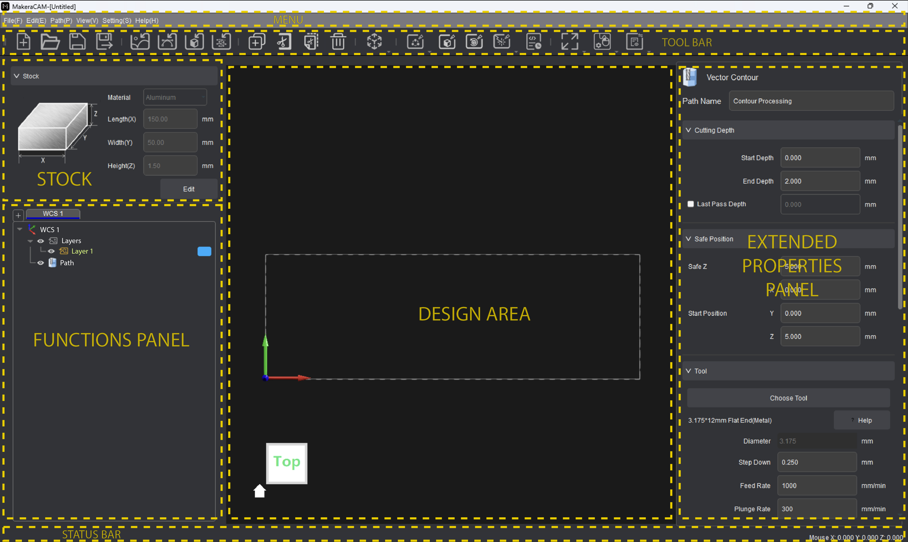
Fonctionnalités de la version
Ce guide a été révisé pour la dernière fois pour Makera CAM version 0.2.0 (bêta). Pour les téléchargements, les fonctionnalités de la version et les notes de publication, consultez la page GitHub de Makera CAM.
Flux de travail type
La création d’un fichier fabricable avec Makera CAM peut être réalisée en suivant les étapes ci-dessous :
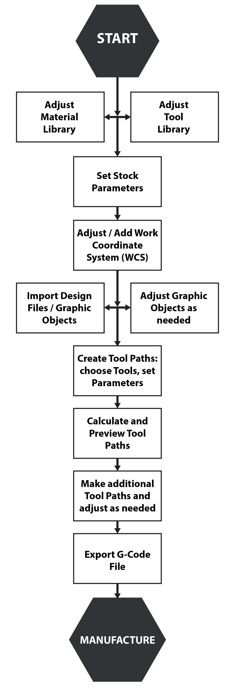
Techniques de navigation
Vous pouvez naviguer dans Makera CAM au moyen de différentes opérations utilisant la souris et les raccourcis clavier, comme indiqué dans cette vidéo. Les techniques de navigation de base sont les suivantes :
- Bouton gauche de la souris :
- Cliquez sur le bouton gauche de la souris pour sélectionner une seule image ou un seul objet graphique vectoriel sous le curseur. Les parcours d’outil générés ne peuvent pas être sélectionnés.
- Maintenez le bouton gauche enfoncé et faites-le glisser vers la droite pour créer une zone de sélection et sélectionner plusieurs objets graphiques. Les objets graphiques entièrement sélectionnés par la zone de sélection seront marqués comme sélectionnés.
- Maintenez le bouton gauche enfoncé et faites-le glisser vers la gauche pour créer une zone de sélection et sélectionner plusieurs objets graphiques. Tous les objets graphiques touchés par la zone de sélection seront marqués comme sélectionnés.
- Maintenez la touche Maj enfoncée tout en cliquant avec le bouton gauche de la souris ou en faisant glisser une zone de sélection pour sélectionner plusieurs objets graphiques.
- Lorsque vous travaillez dans le panneau des fonctions situé à gauche de l’interface principale :
- Cliquez sur le bouton gauche de la souris pour sélectionner une seule entrée de calque / de parcours.
- Maintenez la touche Maj enfoncée et cliquez sur le bouton gauche de la souris pour sélectionner plusieurs entrées de calque / de parcours contiguës.
- Maintenez la touche Ctrl enfoncée et cliquez sur le bouton gauche de la souris pour sélectionner plusieurs entrées de calque / de parcours non contiguës.
- Bouton central de la souris (molette) :
- Maintenez le bouton central enfoncé et faites-le glisser pour vous déplacer dans la zone de conception selon l’angle de vue actuel.
- Maintenez la touche Maj enfoncée tout en maintenant et en faisant glisser le bouton central de la souris pour effectuer une rotation dans la zone de conception et modifier l’angle de vue actuel.
- Lorsqu’aucun objet graphique n’est sélectionné dans la zone de conception, l’origine de rotation de l’écran est le centre du brut.
- Lorsqu’un objet graphique est sélectionné dans la zone de conception, l’origine de rotation est le centre de la combinaison graphique sélectionnée.
- Double-cliquez sur le bouton central pour rétablir la perspective actuelle sur la perspective du DESSUS (TOP) ; le zoom de la zone de conception sera également rétabli.
- Bouton droit de la souris :
- Le bouton droit de la souris ouvre dans la zone de conception un menu qui comprend les fonctions d’édition (copier, couper, coller, supprimer), les fonctions de calque, les fonctions de parcours d’outil, les transformations graphiques et les opérations de bibliothèque. Pour connaître les fonctions spécifiques, reportez-vous aux chapitres suivants.
Pour ajuster des objets graphiques et des fichiers de conception dans Makera CAM, vous devez d’abord passer en mode transformation en ouvrant le menu Transformer dans le panneau des propriétés étendues. En mode transformation, vous pouvez déplacer, faire pivoter et mettre à l’échelle les fichiers de conception. Vous pouvez passer en mode transformation depuis le menu ouvert par un clic droit, ou en ouvrant les propriétés Transformer dans les éléments de menu Édition , ou sélectionner le graphique et utiliser les raccourcis clavier pour accéder aux modes correspondants : (M – déplacement / R – rotation / S – mise à l’échelle). Ces fonctions sont expliquées plus en détail dans la section Ajustement des objets de ce guide.
Sélection des objets
Pour modifier ou manipuler des fichiers de conception 2D, des images importées et des objets graphiques dans Makera CAM, ceux-ci doivent d’abord être sélectionnés comme indiqué dans la section précédente. Lorsque des fichiers vectoriels 2D (SVG, DXG) sont sélectionnés, les lignes de la conception deviennent en pointillés pour indiquer leur sélection, comme le montre ce tutoriel et l’illustration ci-dessous. Les lignes de l’objet 2D adoptent la couleur définie pour le calque dans lequel le fichier de conception a été placé, comme expliqué plus loin dans la section Calques.
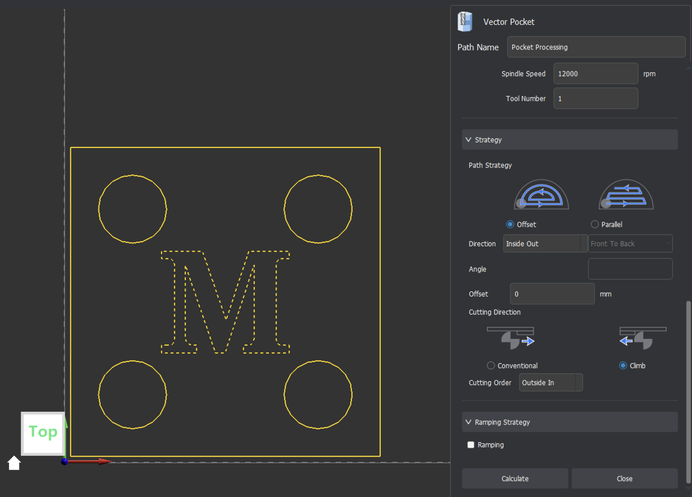
Lorsque vous travaillez avec des fichiers image, la bordure autour de l’image est mise en évidence pour indiquer que l’image a été sélectionnée, comme le montre ce tutoriel et l’illustration ci-dessous. Les lignes de sélection mises en évidence adoptent la couleur définie pour le calque dans lequel le fichier de conception a été placé, comme expliqué plus loin dans la section Calques.
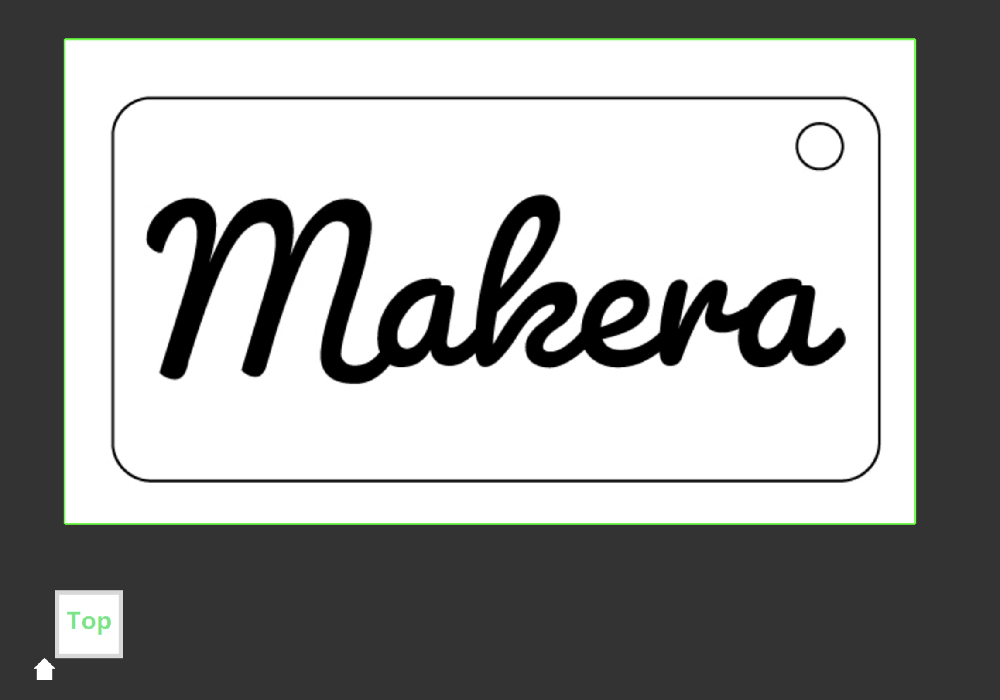
Lorsque vous travaillez avec des modèles 3D (STEP, STL), le modèle est mis en évidence en bleu avec un périmètre jaune lorsqu’il est sélectionné, comme le montre ce tutoriel et l’illustration ci-dessous. Lorsque le modèle 3D n’est pas sélectionné, il est affiché dans la couleur du calque dans lequel il a été placé, comme expliqué plus loin dans la section Calques.
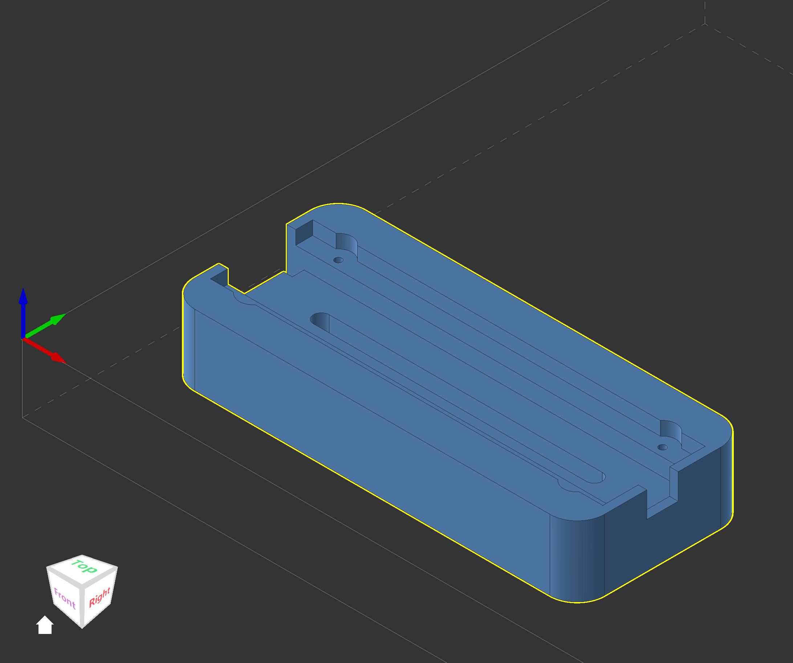
Si une conception, une image ou un modèle n’est pas sélectionné, les options permettant de le manipuler (transformer, mettre en miroir, décalquer ou générer des parcours d’outil) ne seront pas disponibles.
Fonctions principales
Les sections suivantes présentent les principales fonctions de l’interface utilisateur de Makera CAM.
Lancement de Makera CAM
À partir de la version bêta publique de Makera CAM v0.2.0, une fenêtre de sélection de projet s’affiche au lancement :
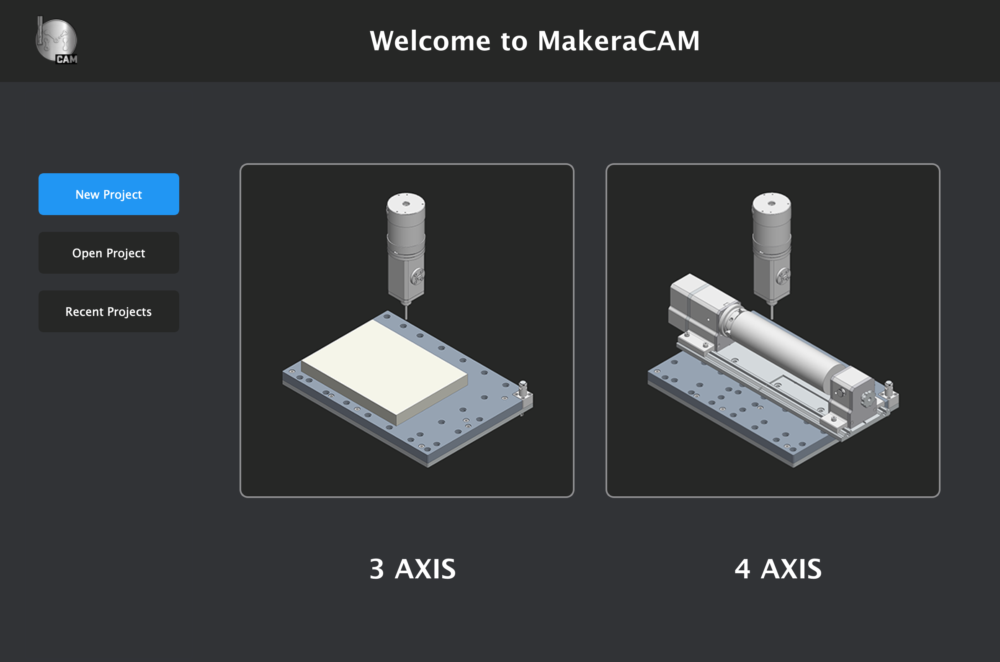
- 3 AXES - Crée un nouveau projet pour l’usinage 3 axes. Cela prédéfinit le BRUT (STOCK) et le système de coordonnées de travail (WCS) pour correspondre à la configuration standard 3 axes de Carvera et Carvera Air, adaptée aux opérations CNC ou laser courantes.
- 4 AXES - Crée un nouveau projet pour l’usinage 4 axes. Cela prédéfinit le BRUT (STOCK) et le WCS selon les besoins de Carvera et Carvera Air lorsque le module rotatif optionnel du quatrième axe a été configuré.
- Ouvrir un projet - Permet de sélectionner et d’ouvrir depuis votre ordinateur un fichier Makera CAM (.mkc) enregistré, pour une configuration 3 axes ou 4 axes.
- Ouvrir les projets récents - Permet de parcourir rapidement jusqu’à 10 fichiers Makera CAM (.mkc) récemment ouverts sur votre ordinateur, pour une configuration 3 axes ou 4 axes.
Depuis un projet Makera CAM, la création d’un projet Nouveau (Ctrl+N) rouvre la fenêtre de sélection de projet.
Présentation de la barre de menus
Fichier
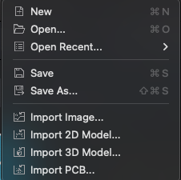
Les options du menu Fichier exécutent les actions suivantes :
| Nouveau | Nouveau projet : ouvre la fenêtre de sélection de projet |
| Ouvrir... | Ouvrir un projet enregistré |
| Ouvrir les projets récents... | Choisir parmi les 10 projets ouverts le plus récemment |
| Enregistrer | Enregistrer le projet |
| Enregistrer sous... | Enregistrer le projet comme copie ou sous un nouveau nom de projet |
| Importer une image... | Importer des fichiers image aux formats JPG/PNG/BMP et dans d’autres formats |
| Importer un modèle 2D... | Importer des fichiers de conception vectorielle DXF / SVG |
| Importer un modèle 3D... | Importer des fichiers de modèle 3D STL / STEP |
| Importer un circuit imprimé... | Importer les composants d’un fichier de conception Gerber de circuit imprimé |
éléments de menu Édition
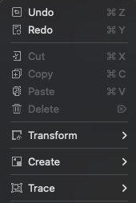
Les options du menu Édition exécutent les actions suivantes :
| Annuler | Annuler la dernière opération de transformation |
| Rétablir | Rétablir une opération de transformation annulée |
| Couper | Couper l’objet sélectionné |
| Copier | Copier l’objet sélectionné |
| Coller | Coller l’objet copié/coupé dans le calque actif |
| Supprimer | Supprimer l’objet sélectionné |
| menu Transformer | Options permettant d’ouvrir les outils de transformation dans le panneau des propriétés étendues (déplacement, rotation, mise à l’échelle, symétrie) |
| Créer | Créer des formes 2D ou 3D simples et cotées sur le calque actuel dans le panneau des propriétés étendues. |
| Décalquer | La fonction de décalquage d’image peut convertir l’image matricielle sélectionnée en graphique vectoriel approximatif ou servir à créer des parcours de contour autour des bords d’un modèle 3D. |
Parcours
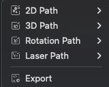
Les options du menu Parcours exécutent les actions suivantes :
| Parcours 2D | Créer des parcours d’outil d’usinage 2D à partir des caractéristiques d’un fichier de conception 2D importé – comprend les opérations de contour 2D, de poche 2D, de perçage 2D, de filetage par fraisage 2D et de chanfrein 2D. |
| Parcours 3D | Créer des parcours d’outil d’usinage 3D à partir des caractéristiques d’un fichier de conception 3D importé : comprend les opérations de relief 3D, contour 3D, poche 3D, perçage 3D, filetage par fraisage 3D et chanfrein 3D. |
| Parcours de rotation | Créer des parcours d’outil d’usinage rotatif 4 axes dans un projet configuré en 4 axes, autour d’un fichier de conception 3D importé : comprend le relief rotatif. |
| Parcours laser | Créer des parcours de traitement laser : comprend le laser vectoriel et l’image laser. |
| Exporter | Exporter les fichiers G-Code des parcours d’outil pour la production |
Affichage
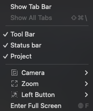
Les options du menu Affichage exécutent les actions suivantes :
| Afficher la barre d’onglets | Afficher ou masquer la barre d’onglets au-dessus de la barre d’outils |
| Afficher tous les onglets | Ouvrir et afficher tous les onglets ouverts (le cas échéant) |
| Barre d’outils | Afficher ou masquer la barre d’outils au-dessus de la zone de conception |
| Barre d’état | Afficher ou masquer la barre d’état sous la zone de conception |
| Projet | Afficher ou masquer le panneau du brut et des fonctions à gauche de la zone de conception |
| Caméra | Modifier la perspective d’affichage de la zone de conception |
| Zoom | Zoomer ou dézoomer, ou ajuster toutes les fonctions dans la zone de conception |
| Bouton gauche | Définir la fonction du clic gauche. Vous pouvez choisir Sélectionner / Panoramique / Zoom (clic : zoom avant / Alt+Clic : zoom arrière) / Rotation |
| Plein écran | Ajuster la fenêtre de l’application au plein écran (le cas échéant) |
Réglages
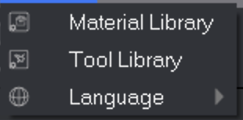
Les options du menu Réglages exécutent les actions suivantes :
| Bibliothèque de matériaux | Configurer la bibliothèque de matériaux pour ajouter ou modifier le nom et les paramètres du matériau du brut |
| Bibliothèque d’outils | Configurer la bibliothèque d’outils, ajuster le type et les paramètres de base des outils, gérer les configurations par groupe et définir les paramètres initiaux des outils selon les différents matériaux |
| Langue | Modifier la langue d’affichage de Makera CAM |
Présentation de la barre d’outils
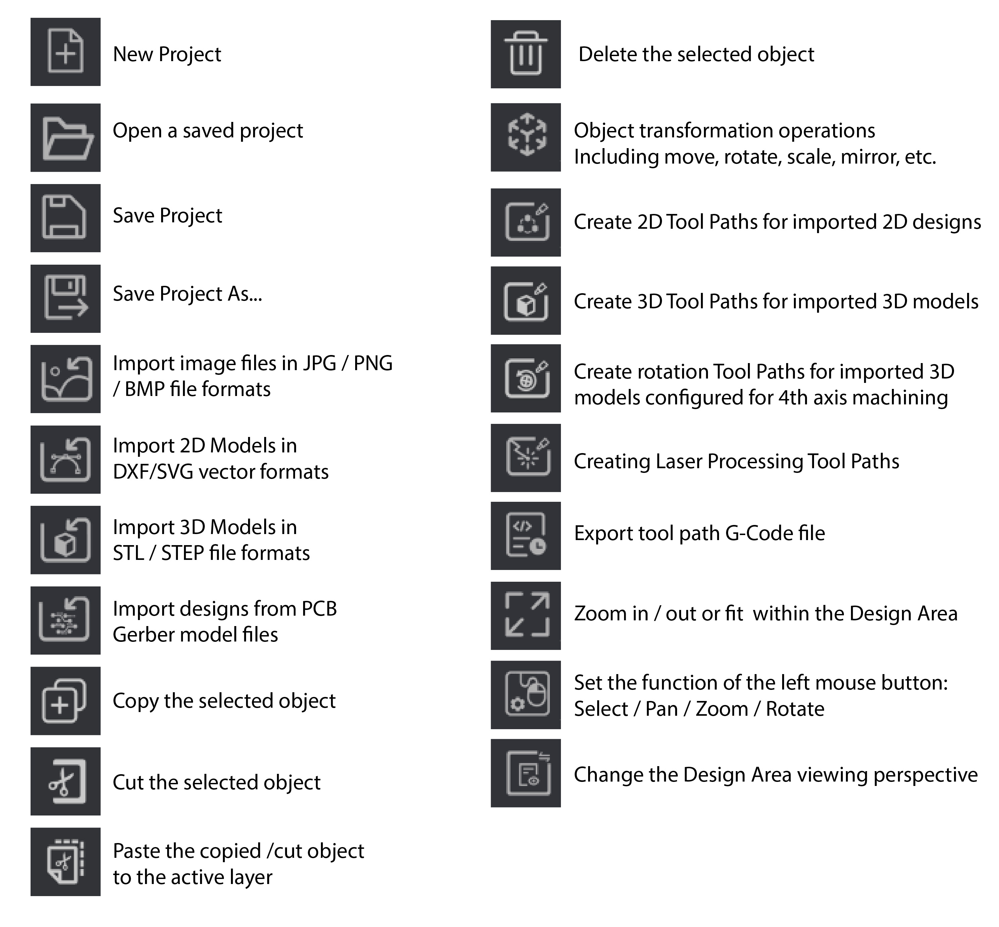
Présentation du brut
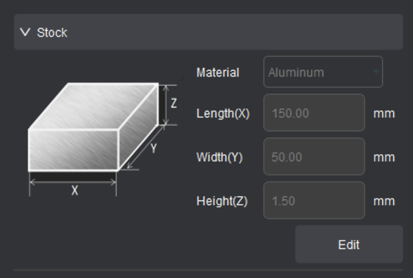
Utilisez cette zone de l’interface pour définir le type et les dimensions du matériau brut. Un périmètre correspondant aux dimensions définies du brut s’affiche dans la zone de conception. Les types de matériau du brut peuvent être modifiés via [Réglages - Bibliothèque de matériaux] as shown in cette vidéo. Les paramètres du brut changent également selon que vous travaillez dans un projet 3 axes ou 4 axes, car les projets 4 axes permettent aussi de définir la forme du brut.
Présentation du panneau des fonctions
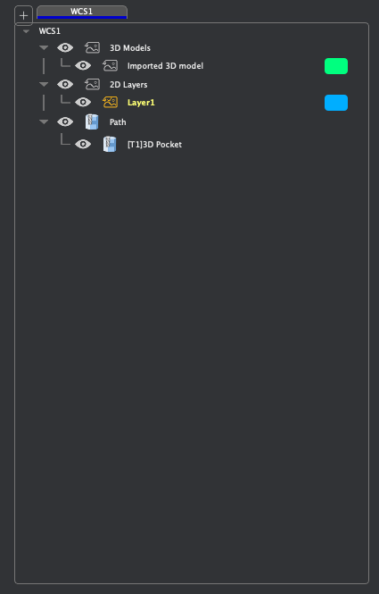
Le panneau des fonctions comprend principalement quatre parties : les onglets du système de coordonnées de travail (WCS), les modèles 3D, les calques 2D et les parcours d’outil.
Le découpage du système de coordonnées de travail permet de créer plusieurs systèmes de coordonnées avec des réglages d’origine différents. En créant et en alternant entre plusieurs onglets de système de coordonnées, vous pouvez passer rapidement d’un groupe à l’autre, chaque groupe comprenant des systèmes de coordonnées, des calques et des parcours d’outil indépendants au sein d’un même document de projet. Le système de coordonnées de travail (WCS 1) par défaut est défini sur le dessus du brut.
Systèmes de coordonnées de travail (WCS)
- Créer un WCS
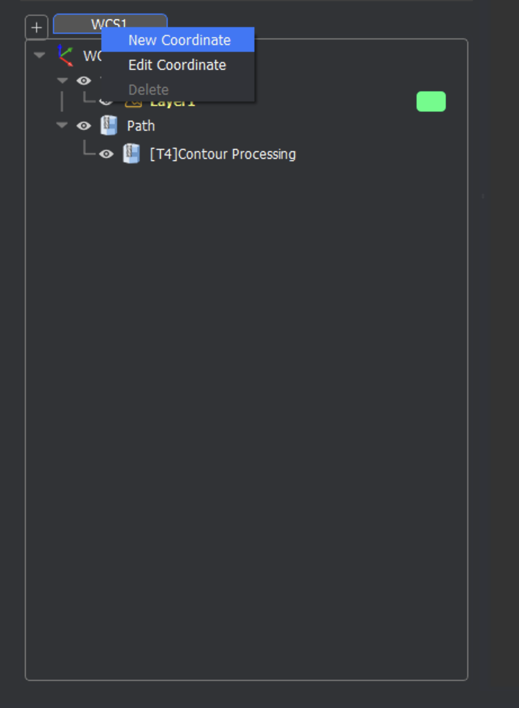
Le [+] Le bouton situé à gauche du panneau des fonctions permet de créer un WCS. Vous pouvez également cliquer avec le bouton droit sur la barre des onglets du système de coordonnées de travail et sélectionner [Nouvelle coordonnée] dans le menu contextuel.
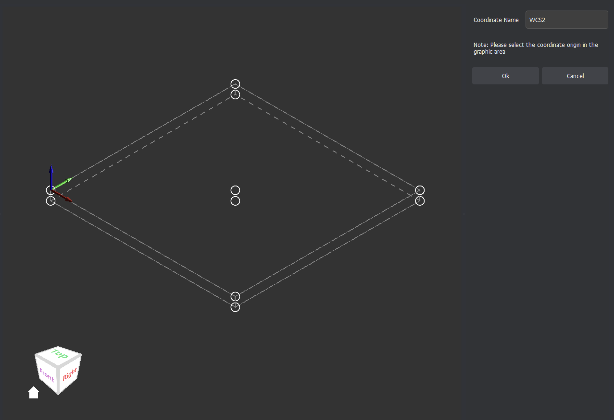
Lors de la création d’un nouveau système de coordonnées de travail, un menu de nom s’affiche dans le panneau des propriétés étendues. Définissez le nom du nouveau système, puis choisissez, parmi 10 points de contrôle d’origine dans les plans SUPÉRIEUR et INFÉRIEUR à l’intérieur du contour du brut dans la zone de conception, les points d’origine du nouveau système. Une fois le réglage effectué, cliquez sur le bouton OK du panneau des propriétés étendues pour terminer la création.
- Modifier le WCS
Après avoir cliqué avec le bouton droit sur la barre des onglets WCS en haut du panneau des fonctions, choisissez [Modifier les coordonnées] dans le menu contextuel. L’interface de réglage du nom du système actuel s’affiche dans le panneau des propriétés étendues et permet de modifier ce nom. La position de l’origine du système actuel est affichée dans la zone de conception. Vous pouvez resélectionner 10 points de contrôle d’origine dans les plans SUPÉRIEUR et INFÉRIEUR à l’intérieur du périmètre du brut pour modifier l’origine. Après tous les réglages, cliquez sur OK pour terminer la modification.
Si un objet graphique se trouve déjà dans le système de coordonnées actuel, il s’adaptera aux changements de l’origine et correspondra automatiquement aux nouveaux réglages du système de coordonnées.
- Supprimer un système de coordonnées de travail
Cliquez avec le bouton droit sur l’onglet WCS à modifier et sélectionnez [Supprimer] dans le menu contextuel. Le système affiche une demande de confirmation pour supprimer le WCS sélectionné. Cliquez sur [Oui] pour terminer la suppression du système actuel. Lors de la suppression d’un système de coordonnées de travail, les données des listes de calques et de parcours d’outil associées sont également supprimées. Veuillez confirmer que toutes les données du système de coordonnées de travail peuvent être supprimées avant de continuer.
Modèles 3D
Dans un projet Makera CAM, le panneau des fonctions affiche une section pour chaque modèle 3D importé ou créé dans le projet. Consultez cette vidéo pour plus d’exemples sur l’utilisation des modèles 3D.
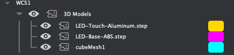
Chaque fois qu’un nouveau modèle 3D est importé ou créé, il est ajouté à cette section du panneau des fonctions. Le sélecteur de couleur à côté du nom du modèle modifie son apparence lorsqu’il n’est pas sélectionné. Lorsqu’un modèle 3D est sélectionné, il est mis en évidence en bleu avec un périmètre jaune, comme décrit précédemment dans la Sélection des objets section de ce guide. Si vous cliquez avec le bouton droit sur un élément de cette section du panneau des fonctions, les options suivantes apparaissent :
- Importer un modèle 3D…
Permet de sélectionner sur votre ordinateur un modèle 3D aux formats STL / STEP et de l’importer dans votre projet Makera CAM.
- Créer un modèle 3D
Ouvre le panneau des propriétés étendues pour créer dans Makera CAM un modèle 3D coté, notamment une forme de cube, de cylindre ou de cône, comme expliqué plus loin dans la section Création d’objets de ce guide.
- Cloner le modèle
Crée un duplicata du modèle 3D sélectionné et l’ajoute comme nouvel objet dans le panneau des fonctions.
- Masquer tous les modèles / Afficher tous les modèles
Pour afficher ou masquer tous les modèles 3D, vous pouvez également cliquer sur l’ icône en forme d’œil située devant les fonctions Modèles 3D en haut de la liste des modèles 3D afin d’afficher ou masquer tous les objets Modèle 3D. Vous pouvez également cliquer avec le bouton droit sur la fonction Modèles 3D et sélectionner [Afficher tous les calques] / [Masquer tous les calques] pour afficher ou masquer tous les modèles 3D.
Calques 2D
La fonction Calques du panneau des fonctions contient la liste de tous les calques 2D du système de coordonnées actuel. Consultez cette vidéo pour plus d’exemples sur l’utilisation des calques.
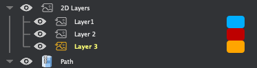
Chaque fois qu’un nouveau projet Makera CAM est créé, un seul calque est créé et sélectionné comme calque actif. Lorsqu’une conception 2D est importée, elle est créée comme nouveau calque et ajoutée à la section Calques 2D du panneau des fonctions. Lorsqu’une conception 2D ou une image est importée et sélectionnée, elle s’affiche et est mise en évidence avec la couleur du calque, comme décrit dans Sélection des objets section de ce guide. Si vous cliquez avec le bouton droit sur un élément de cette section du panneau des fonctions, les options suivantes apparaissent :
- Importer un graphique
Choisir entre l’importation d’une Image (JPG / PNG / BMP), l’importation d’un Modèle 2D (SVG / DXF), ou l’importation des composants d’un PCB fichier Gerber.
- Nouveau calque
Dans la liste des calques, cliquez à l’endroit où vous souhaitez insérer un nouveau calque, cliquez avec le bouton droit, puis sélectionnez [Insérer un calque] dans le menu contextuel. Un nouveau calque est inséré au-dessus de la position du calque sélectionné. Le nom du nouveau calque est « Nouveau calque » par défaut. Le nouveau calque est activé par défaut comme calque actuel. Pour insérer un nouveau calque en bas de la liste, cliquez avec le bouton droit sur la fonction Calque en haut de la liste et sélectionnez [Nouveau calque] dans le menu contextuel afin d’insérer un nouveau calque en bas de la liste.
- Supprimer un calque
Dans la liste des calques, cliquez avec le bouton gauche sur le calque à supprimer pour le sélectionner. Pour supprimer plusieurs calques à la fois, utilisez Ctrl+Clic gauche pour sélectionner des calques non contigus, ou Maj+Clic gauche pour sélectionner les zones de début et de fin de calques contigus dans la liste. Après avoir sélectionné le ou les calques à supprimer, cliquez avec le bouton droit sur la sélection et choisissez [Supprimer] dans le menu contextuel pour terminer la suppression du ou des calques sélectionnés.
La suppression d’un calque supprime tous les objets qu’il contient. Si les graphiques ont généré des informations de parcours d’outil correspondantes, la suppression du calque ne supprime pas les informations de parcours d’outil associées aux graphiques. REMARQUE : un calque actif ne peut pas être supprimé. Vous devez d’abord passer à un autre calque avant d’essayer de supprimer le calque actuellement actif.
- Renommer un calque
Dans la liste des calques, cliquez avec le bouton gauche sur le calque à renommer, puis cliquez à nouveau sur son nom sélectionné, ou cliquez avec le bouton droit sur le nom et sélectionnez [Renommer] dans le menu contextuel pour renommer le calque sélectionné. Après avoir modifié le nom, appuyez sur Entrée ou cliquez ailleurs dans la fenêtre système du panneau des fonctions pour terminer le renommage.
- Afficher/Masquer les calques
Dans la liste des calques 2D, cliquez sur le icône en forme d’œil devant chaque calque pour afficher ou masquer son contenu. Vous pouvez également cliquer avec le bouton droit sur un calque et sélectionner [Afficher] dans le menu contextuel affiché, ou [Masquer] pour afficher ou masquer le contenu du calque sélectionné.
Pour afficher ou masquer tous les calques, cliquez sur le icône en forme d’œil devant les fonctions Calques 2D en haut de la liste afin d’afficher ou masquer tous les calques. Vous pouvez également cliquer avec le bouton droit sur la fonction Calques 2D et sélectionner [Afficher tous les calques] / [Masquer tous les calques] pour afficher ou masquer tous les calques 2D.
- Activer le calque actuel
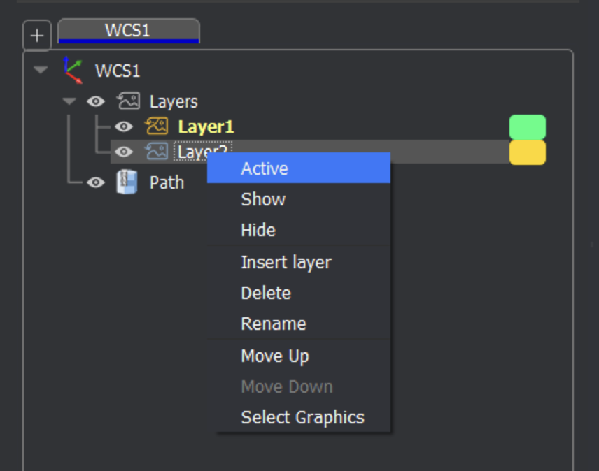
Dans la liste des calques 2D, un calque actuel est activé par défaut. Lors de la création ou du collage d’un graphique, celui-ci est placé par défaut sur le calque actif. Pour activer un calque, cliquez avec le bouton droit sur son nom et choisissez [Actif] dans le menu contextuel pour le définir comme calque actif. Une fois le calque défini comme actif par défaut, son nom est mis en évidence dans le panneau des fonctions.
- Sélectionner tous les graphiques du calque
Dans la liste des calques 2D, sélectionnez le nom du calque dont vous voulez sélectionner tous les graphiques, cliquez avec le bouton droit sur ce nom, puis sélectionnez [Sélectionner les graphiques] dans le menu contextuel pour sélectionner tous les graphiques du calque actuel. Vous pouvez aussi double-cliquer sur le nom du calque pour sélectionner rapidement tous ses graphiques.
- Modifier l’ordre des calques
Dans la liste des calques 2D, sélectionnez le calque à déplacer, cliquez avec le bouton droit sur son nom, puis sélectionnez [Monter] / [Descendre] dans le menu contextuel pour déplacer le ou les calques sélectionnés vers le haut ou vers le bas de la liste. Vous pouvez également modifier l’ordre des calques en faisant glisser le calque avec le bouton gauche de la souris.
- Modifier la couleur d’affichage du calque
Cliquez sur le rectangle coloré à droite du nom du calque pour modifier sa couleur d’affichage. Une fois le rectangle sélectionné, une interface de choix de couleur s’ouvre pour modifier la couleur d’affichage du calque.
Parcours
La fonction Parcours contient la liste de tous les parcours d’outil définis dans le système de coordonnées actuel. Notez que les numéros « T » affichés avant le type de parcours créé désignent l’outil ou les outils utilisés dans ce parcours. Consultez cette vidéo pour des exemples d’utilisation des parcours.
- Créer un parcours d’outil
Cliquez avec le bouton droit sur la fonction Parcours et sélectionnez [Nouveau parcours d’outil] dans le menu contextuel pour créer les types de parcours d’outil d’usinage suivants :
| Parcours 2D | Créer des parcours d’outil d’usinage 2D pour les conceptions 2D et les objets graphiques vectoriels, notamment Contour 2D / Poche 2D / Perçage 2D / Filetage par fraisage 2D / Chanfrein 2D |
| Parcours 3D | Créer des parcours d’outil d’usinage 3D pour les modèles 3D, notamment Relief 3D / Contour 3D / Poche 3D / Perçage 3D / Filetage par fraisage 3D / Chanfrein 3D |
| Parcours de rotation | Créer des parcours d’outil d’usinage rotatif 4 axes pour les modèles 3D importés, notamment le relief rotatif |
| Parcours laser | Créer des parcours de traitement laser pour les images ou modèles 2D importés, notamment Laser vectoriel / Image laser |
- Modifier le parcours d’outil
Double-cliquez sur le nom du parcours d’outil, ou cliquez avec le bouton droit sur le nom à modifier et sélectionnez [Modifier] dans le menu contextuel. L’interface actuelle de réglage des paramètres du parcours s’affiche dans le panneau des propriétés étendues. Si l’objet associé au parcours est visible dans la zone de conception, les éléments graphiques associés sont automatiquement sélectionnés lors de la modification. Après avoir ajusté les différents paramètres du parcours, cliquez sur [Calculer] en bas du panneau des propriétés étendues pour terminer le recalcul du parcours.
Lors du recalcul du parcours d’outil, vous devez vous assurer qu’au moins un objet est sélectionné dans la zone de conception et que cet objet respecte les exigences de calcul des paramètres actuels du parcours ; sinon, le parcours spécifié ne peut pas être régénéré et un message d’erreur s’affiche. Lors de la modification d’un parcours, vous pouvez resélectionner l’objet associé. Lors du recalcul, le parcours est généré à partir du dernier objet graphique sélectionné. Le parcours nouvellement généré remplace les informations du parcours d’origine et est associé au dernier graphique sélectionné dans la zone de conception.
Si un objet est transformé ou ajusté après la création d’un parcours d’outil, celui-ci ne sera pas mis à jour automatiquement. Vous devrez sélectionner [Modifier] pour ouvrir les paramètres de ce parcours et cliquer sur [Calculer] en bas du panneau des propriétés étendues pour terminer le recalcul du parcours.
- Supprimer le parcours d’outil
Dans la liste des parcours, cliquez avec le bouton gauche sur le parcours à supprimer. Vous pouvez utiliser Ctrl+bouton gauche pour sélectionner des parcours non contigus, ou Maj+bouton gauche pour sélectionner les zones de début et de fin de parcours contigus. Une fois la plage sélectionnée, cliquez avec le bouton droit sur le nom du parcours et sélectionnez [Supprimer] dans le menu contextuel pour terminer la suppression du ou des parcours sélectionnés.
- Renommer le parcours d’outil
Dans la liste des parcours, cliquez avec le bouton gauche sur le parcours à renommer, puis cliquez à nouveau sur son nom sélectionné, ou cliquez avec le bouton droit sur le nom et sélectionnez [Renommer] dans le menu contextuel affiché pour renommer le parcours sélectionné. Après avoir ajusté le nom, appuyez sur Entrée ou cliquez ailleurs dans le panneau des fonctions pour terminer le renommage.
- Dupliquer le parcours d’outil
Dans la liste des parcours, cliquez avec le bouton gauche sur le parcours à cloner, cliquez avec le bouton droit sur son nom sélectionné et sélectionnez [Dupliquer] dans le menu contextuel pour dupliquer le parcours sélectionné et générer une copie en bas de la liste des parcours.
- Afficher/Masquer le parcours d’outil
Dans la liste des parcours, cliquez sur l’icône pour afficher ou masquer le parcours sélectionné. Vous pouvez également cliquer avec le bouton droit sur le nom du parcours et sélectionner [Afficher] / [Masquer] dans le menu contextuel pour afficher ou masquer le parcours sélectionné.
Pour afficher ou masquer tous les parcours, cliquez sur l’ œil icône devant la fonction Parcours en haut de la liste des parcours. Vous pouvez également cliquer avec le bouton droit sur la fonction Parcours et sélectionner [Afficher tous les parcours] / dans le menu contextuel pour afficher ou masquer tous les parcours d’outil. dans le menu contextuel pour afficher ou masquer tous les parcours d’outil.
- Afficher/Masquer le déplacement rapide
Dans la liste des parcours, cliquez avec le bouton droit sur le nom du parcours d’outil concerné et sélectionnez [Afficher le déplacement rapide] / [Masquer le déplacement rapide] dans le menu contextuel pour afficher ou masquer les informations de l’icône de déplacement rapide dans l’aperçu du parcours d’outil.
- Déplacer le parcours d’outil
Dans la liste des parcours, sélectionnez le parcours à déplacer, cliquez avec le bouton droit sur son nom et sélectionnez [Monter] / [Descendre] dans le menu contextuel pour déplacer le parcours sélectionné vers le haut ou vers le bas de la liste. Vous pouvez également modifier l’ordre en faisant glisser un parcours avec le bouton gauche de la souris.
- Exporter un fichier de parcours d’outil G-Code
Pour exporter un fichier de parcours d’outil G-Code, cliquez avec le bouton droit sur la fonction Parcours en haut de la liste et sélectionnez [Enregistrer tous les parcours] dans le menu contextuel pour exporter tous les parcours. Vous pouvez également sélectionner avec le bouton gauche le nom d’un parcours précis à exporter, cliquer avec le bouton droit sur ce nom et sélectionner [Exporter] dans le menu contextuel. Dans la fenêtre qui s’ouvre, vérifiez que le ou les parcours à exporter sont cochés, puis cliquez sur le [Exporter] bouton pour exporter uniquement les parcours sélectionnés. Dans la boîte de dialogue d’enregistrement qui apparaît, définissez l’emplacement et le nom du fichier G-Code à exporter, puis cliquez sur le [Enregistrer] bouton pour terminer l’enregistrement du fichier de parcours d’outil sur votre ordinateur.
Bibliothèque de matériaux
La bibliothèque de matériaux sert à créer et gérer les types de matériau brut et leurs aperçus, comme indiqué dans cette vidéo. Les informations de matériau servent principalement à afficher les aperçus du brut dans le panneau Brut de l’interface principale et à régler les paramètres des outils pour les matériaux associés dans la bibliothèque d’outils.
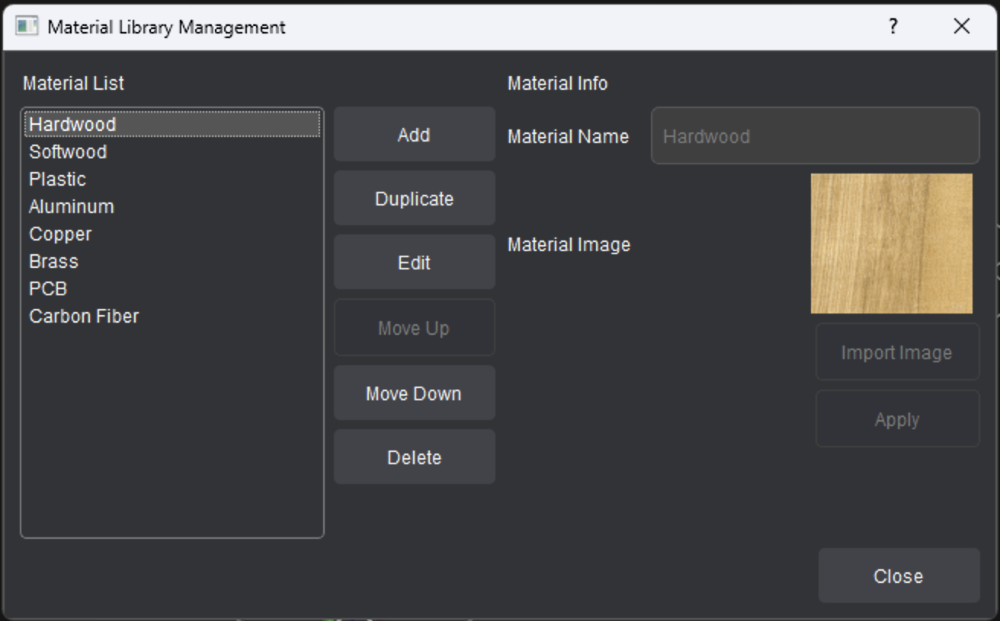
- Créer un matériau :
- Cliquez sur le [Ajouter] , saisissez le nom du matériau et appuyez sur [Importer une image] pour importer une image d’aperçu du matériau, puis cliquez sur [Appliquer] pour terminer la création du nouveau matériau.
- Modifier des matériaux existants :
- Sélectionnez avec le bouton gauche de la souris le nom du matériau à modifier dans la liste de gauche. Le matériau sélectionné apparaît à droite dans la fenêtre de la bibliothèque. Appuyez sur [Modifier] pour modifier le nom et l’image d’aperçu. Cliquez ensuite sur [Appliquer] pour appliquer les modifications au matériau sélectionné.
- Dupliquer un matériau :
- Sélectionnez avec le bouton gauche le nom du matériau à cloner dans la liste de gauche, puis cliquez sur [Dupliquer] pour terminer la duplication. Le nouveau matériau est ajouté en bas de la liste.
- Supprimer un matériau :
- Sélectionnez avec le bouton gauche le nom du matériau à supprimer dans la liste de gauche, puis cliquez sur [Supprimer] pour terminer la suppression du matériau.
- Note: Lors de la suppression d’un matériau, si un outil utilise ses informations, les paramètres d’usinage de ce matériau dans la configuration de l’outil sont également supprimés avec le matériau correspondant.
- Sélectionnez avec le bouton gauche le nom du matériau à supprimer dans la liste de gauche, puis cliquez sur [Supprimer] pour terminer la suppression du matériau.
Bibliothèque d’outils
La bibliothèque d’outils sert à gérer les informations des outils utilisés pour concevoir les parcours d’outil, comme indiqué dans cette vidéo. Les paramètres comprennent le type et l’apparence de base de l’outil, les paramètres d’usinage de l’outil pour les matériaux associés, etc. Les outils peuvent être regroupés et gérés dans des listes, et les informations d’outil peuvent être sauvegardées et restaurées.
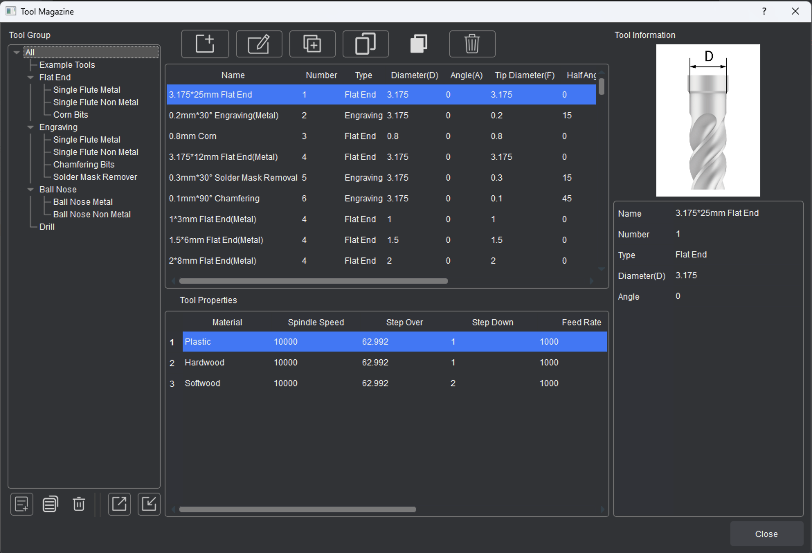
Gestion des groupes d’outils
Les groupes d’outils servent à organiser et gérer les outils par groupes. Ils permettent de créer, renommer, dupliquer, supprimer, importer et exporter des outils en groupe.
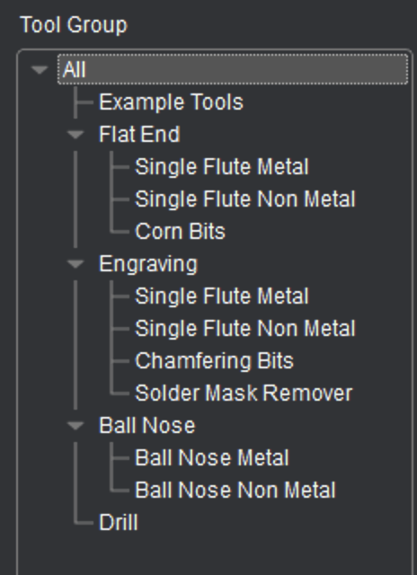
- Créer un groupe d’outils :
- Sélectionnez le nœud parent du groupe à créer, puis cliquez sur [Nouveau groupe d’outils], et un nouveau nœud de groupe d’outils sera créé sous le groupe sélectionné.
- Renommer un groupe d’outils :
- Cliquez avec le bouton droit sur le nom du groupe et sélectionnez le [Renommer] dans le menu qui apparaît pour renommer le groupe.
- Copier un groupe d’outils :
- Cliquez avec le bouton droit sur le groupe à copier, puis cliquez sur [Dupliquer], et une copie du groupe sélectionné sera créée à la fin de la liste des groupes d’outils du niveau actuel.
- Supprimer un groupe d’outils :
- Sélectionnez le groupe à supprimer et cliquez sur [Supprimer] pour supprimer le groupe actuel et toutes les informations d’outil qu’il contient.
- Exporter / importer les informations d’un groupe d’outils :
- Exporter : Sélectionnez le groupe à exporter, puis cliquez sur [Exporter] pour enregistrer sur votre ordinateur le groupe sélectionné, les informations d’outil qu’il contient et les informations de matériau référencées par ces outils.
- Importer : Sélectionnez le nœud parent dans lequel importer le groupe d’outils, puis cliquez sur [Importer] et sélectionnez le fichier d’informations d’outil à restaurer et confirmez l’importation. Les informations du groupe d’outils sont restaurées et importées dans le nœud de groupe actuellement sélectionné, tandis que les informations de la bibliothèque de matériaux associée sont restaurées en même temps. Si la bibliothèque actuelle contient déjà le matériau présent dans le fichier d’outil, aucun traitement n’est effectué. Si certaines informations de matériau manquent, elles sont automatiquement ajoutées à la bibliothèque.
Gestion des outils
La gestion des outils permet de prédéfinir les configurations d’outils et prend en charge leur création, modification, copie, collage, duplication et suppression.
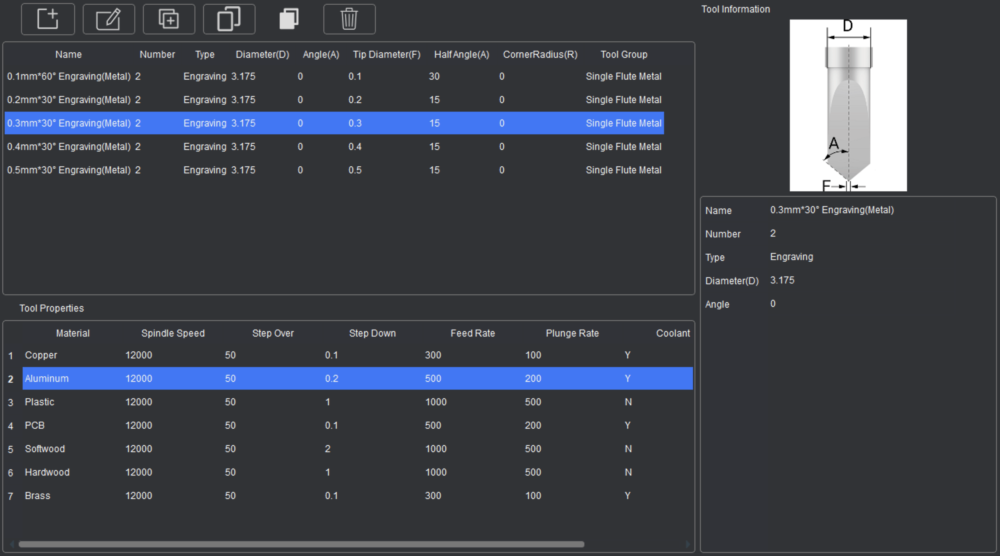
Depuis la section Gestion des outils de la bibliothèque d’outils, nous pouvons ajouter, copier, dupliquer ou supprimer des outils dans nos groupes d’outils.
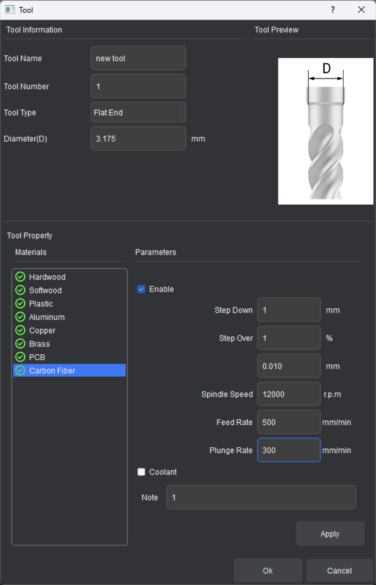
- Ajouter des outils :
- Après avoir choisi un groupe d’outils, appuyez sur [Ajouter un outil] pour créer un nouvel outil. Définissez son nom et son type, puis utilisez l’illustration de sa forme pour définir les paramètres physiques propres à ce type d’outil.
- Définissez le numéro de l’outil. Il correspond au numéro utilisé par les parcours d’outil créés. Sur une CNC équipée d’un changeur d’outils automatique comme Carvera, il correspond à la position de l’outil chargé dans le changeur automatique (1–6). Sur les CNC comme Carvera Air, certains numéros entraînent une pause et un changement d’outil manuel. Remarque : le numéro peut également être réattribué manuellement lors de la création des réglages du parcours d’usinage.
- Dans les propriétés de l’outil, vous pouvez définir les paramètres d’usinage pour chaque matériau. Dans la liste de gauche, sélectionnez le matériau dont les paramètres doivent être définis, puis définissez à droite les paramètres utilisés pour ce matériau et cochez l’ [Activer] option afin d’autoriser l’utilisation de ces paramètres de matériau pour l’outil sélectionné. Une fois le réglage terminé, cliquez sur [Appliquer] pour confirmer les paramètres. L’identifiant du matériau dont les paramètres d’usinage sont définis s’affiche en vert. Pour ajouter ou modifier les matériaux affichés, consultez la bibliothèque de matériaux.
- Modifier les outils :
- Sélectionnez un outil et cliquez sur [Modifier l’outil] pour modifier et mettre à jour la configuration actuelle de l’outil.
- Lorsque vous modifiez les paramètres d’outil correspondant aux matériaux, vous devez cliquer sur [Appliquer] pour confirmer les modifications.
- Copier des outils entre groupes d’outils :
- Sélectionnez l’outil à copier et cliquez sur [Copier l’outil]. Passez au groupe auquel vous voulez ajouter l’outil copié, puis cliquez sur [Coller l’outil]. La configuration de l’outil copiée est collée dans le groupe sélectionné.
- Dupliquer des outils :
- Sélectionnez l’outil à dupliquer, puis cliquez sur [Dupliquer l’outil]. Une copie de l’outil sélectionné est ajoutée au groupe d’outils actuel.
- Supprimer des outils :
- Sélectionnez l’outil à supprimer, puis cliquez sur [Supprimer l’outil] pour supprimer la configuration de l’outil sélectionné.
Outils de transformation
La possibilité d’ajuster les objets graphiques et les fichiers de conception importés facilite et accélère le flux de travail entre CAO et FAO dans l’interface principale de Makera CAM. Pour plus d’informations sur la transformation des conceptions 2D, des images et des modèles 3D, consultez cette vidéo.
La transformation des objets prend en charge quatre opérations : déplacer, faire pivoter, mettre à l’échelle et mettre en miroir les objets. Après avoir sélectionné un objet, vous pouvez entrer en mode transformation depuis la barre de menus supérieure, la barre d’outils principale, le menu contextuel ou avec les raccourcis M – déplacement / R – rotation / S – mise à l’échelle. Les outils Transformer s’ouvrent alors dans le panneau des propriétés étendues :
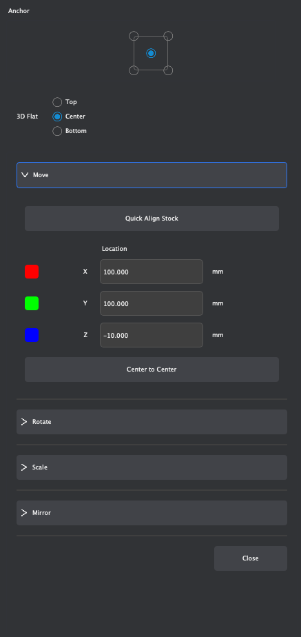
Pour chaque transformation, vous pouvez choisir en haut du panneau des propriétés étendues le point d’ancrage servant de base, par rapport à l’objet sélectionné. Ces options varient selon la transformation choisie et selon qu’un objet 2D ou 3D est sélectionné. Vous pouvez ensuite choisir la transformation voulue pour afficher les paramètres propres à l’opération.
Déplacement :
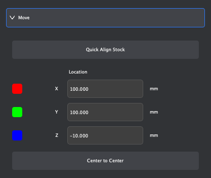
- Sélectionnez l’objet à déplacer et passez en mode transformation de déplacement.
- Cinq points d’ancrage de référence du déplacement se trouvent en haut des réglages des paramètres de transformation dans le panneau des propriétés étendues. En sélectionnant différentes positions d’ancrage, les coordonnées de l’objet s’affichent selon le point choisi et vous pouvez saisir des coordonnées précises pour ajuster sa position.
- [Alignement rapide sur le brut] centre automatiquement l’objet sélectionné dans les limites du brut.
- Dans le panneau des propriétés étendues, vous pouvez saisir des positions précises pour déplacer un objet vers un emplacement donné dans les plans X, Y et Z, et consulter la position actuelle des objets sélectionnés.
- Vous pouvez aussi cliquer avec le bouton gauche et faire glisser la souris pour sélectionner le repère d’axe au centre de l’objet sélectionné, puis déplacer manuellement l’objet dans la direction de l’axe choisi. Pour déplacer librement des objets sélectionnés, cliquez avec le bouton gauche sur l’icône carrée au centre du repère d’axes et faites-la glisser afin de repositionner les objets librement dans les plans X et Y de la zone de conception.
- [Centre à centre] permet de centrer automatiquement deux objets sélectionnés, comme décrit dans la section suivante.
Rotation :
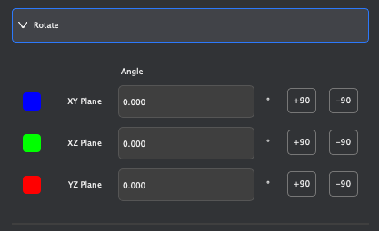
- Sélectionnez l’objet à faire pivoter et passez en mode transformation de rotation.
- En mode rotation, seul le centre de l’objet sert de point d’ancrage pour les opérations de transformation. Pendant la rotation, l’angle s’affiche et est défini avec le centre de l’objet comme point d’ancrage.
- Dans le panneau des propriétés étendues, vous pouvez saisir des angles précis pour faire pivoter l’objet sélectionné dans les plans XY, XZ ou YZ, et consulter l’angle actuel des objets sélectionnés.
- À côté des paramètres d’angle manuels, vous pouvez utiliser les boutons de rotation rapide pour effectuer une rotation de +90 ou −90 degrés dans les plans XY, XZ ou YZ.
- Vous pouvez également faire glisser la souris pour sélectionner le repère circulaire au centre de l’objet sélectionné, puis cliquer avec le bouton gauche, faire glisser et le faire pivoter librement.
Mise à l’échelle :
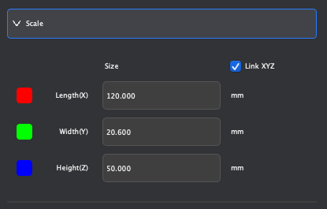
- Sélectionnez l’objet à mettre à l’échelle et passez en mode transformation de mise à l’échelle.
- Cinq points d’ancrage de référence du déplacement se trouvent en haut des réglages de transformation à droite. En sélectionnant différentes positions d’ancrage, la position de l’objet sélectionné correspondant à l’ancrage sert d’origine pour la mise à l’échelle.
- Dans le panneau des propriétés étendues, vous pouvez saisir des dimensions précises pour mettre l’objet sélectionné à l’échelle selon sa longueur (X), sa largeur (Y) ou sa hauteur (Z), et consulter la taille actuelle des objets sélectionnés.
- Vous pouvez également faire glisser la souris dans la zone de conception pour sélectionner le repère d’axe au centre de l’objet sélectionné et le mettre à l’échelle dans la direction de l’axe.
- Avec LinkXYZ coché, les proportions de l’objet sélectionné sont conservées pendant les transformations de mise à l’échelle.
Symétrie :
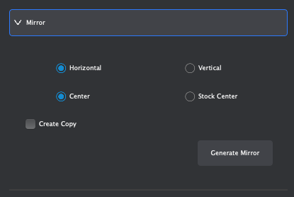
La transformation de symétrie prend en charge le retournement horizontal et vertical. Si l’ Créer une copie option est cochée, l’objet d’origine est conservé et une copie de l’objet après symétrie est créée. Pour appliquer une symétrie aux objets sélectionnés :
- Sélectionnez l’objet à mettre en miroir et ouvrez l’opération de symétrie avec les outils de transformation du panneau des propriétés étendues.
- Dans les paramètres de symétrie, sélectionnez l’axe autour duquel effectuer la symétrie (Horizontal or Vertical)
- Sélectionnez l’origine centrale de l’opération de symétrie (Centre de l’objet Centre or Centre du brut)
- Cochez l’ Créer une copie option si nécessaire.
- Cliquez sur le [Générer Symétrie] bouton pour terminer l’opération de symétrie.
Centre à centre
Le mode de déplacement centre à centre peut aligner et déplacer des objets sélectionnés par rapport à la position d’objets cibles entre plusieurs systèmes de coordonnées, comme indiqué dans cette vidéo.
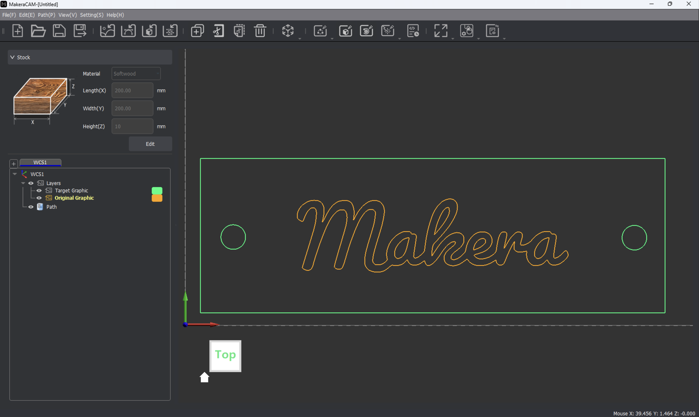
Aligner deux objets avec Centre à centre :
- Sélectionnez le ou les objets à aligner (2D ou 3D).
- Passez en mode centre à centre via les paramètres de déplacement des outils de transformation du panneau des propriétés étendues, comme décrit dans la section précédente.
- Selon les instructions affichées dans le panneau des propriétés étendues, sélectionnez dans le sous-ensemble de combinaison d’objets l’objet de référence à déplacer et à aligner. L’étape suivante utilisera le centre de cet objet comme référence d’alignement.
- Suivez les instructions et sélectionnez l’objet cible à aligner. Une fois l’opération réussie, l’objet d’origine est déplacé en utilisant le centre de l’objet de référence défini à l’étape précédente afin de s’aligner sur le centre de l’objet cible sélectionné.
Créer des outils
Les fonctions de création permettent de créer des objets 2D ou 3D dans la zone de conception selon les dimensions définies, comme indiqué dans cette vidéo.
Créer des modèles 2D :
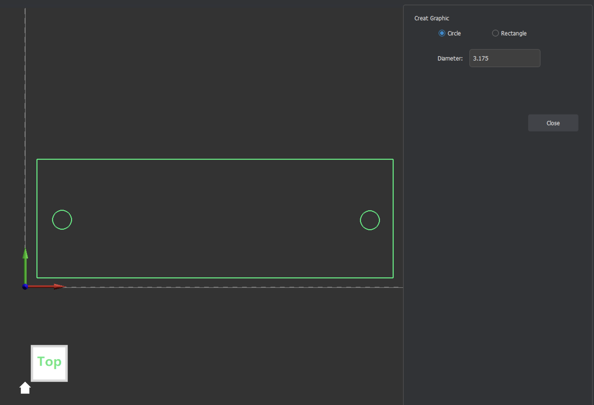
Accédez à l’opération de création de modèle 2D depuis la barre de menus supérieure, la barre d’outils principale ou le menu contextuel.
- Dans le panneau des propriétés étendues, sélectionnez le type de forme à créer (cercle ou rectangle).
- Définissez la taille de la forme. Pour un cercle, elle est définie par son diamètre. Pour un rectangle, elle est définie par sa longueur et sa largeur.
- Déplacez le curseur vers la zone où vous voulez créer la forme dans la zone de conception du système de coordonnées actuel, puis cliquez avec le bouton gauche pour générer la forme selon les paramètres saisis à l’emplacement du curseur. Les objets de conception 2D sont créés sur le calque actif sélectionné dans la liste Calques 2D du panneau des fonctions.
Créer des modèles 3D :
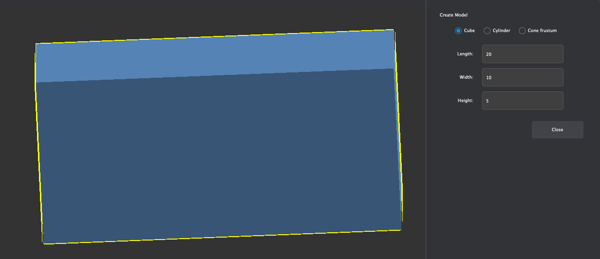
Accédez à l’opération de création de modèle 3D depuis la barre de menus supérieure, la barre d’outils principale ou le menu contextuel.
- Dans le panneau des propriétés étendues, sélectionnez le type de forme à créer (cube, cylindre ou tronc de cône).
- Définissez la taille de la forme. Pour un cube, elle est définie par la longueur, la largeur et la hauteur. Pour un cylindre ou un cône, elle est définie par le ou les diamètres et la hauteur.
- Déplacez le curseur vers la zone où vous voulez créer la forme dans la zone de conception du système de coordonnées actuel, puis cliquez avec le bouton gauche pour générer la forme selon les paramètres saisis à l’emplacement du curseur. Un nouvel élément est alors ajouté à la liste du groupe Modèles 3D dans le panneau des fonctions.
Outils de décalquage
Makera CAM v0.2.0 et les versions ultérieures permettent de décalquer les caractéristiques et géométries détectées dans deux types d’objets importés : les images et les modèles 3D.
Décalquer une image :
La fonction Décalquer une image peut convertir les informations de contraste élevé d’un fichier image matricielle (JPG/PNG/BMP) en un contour vectoriel, comme indiqué dans cette vidéo.
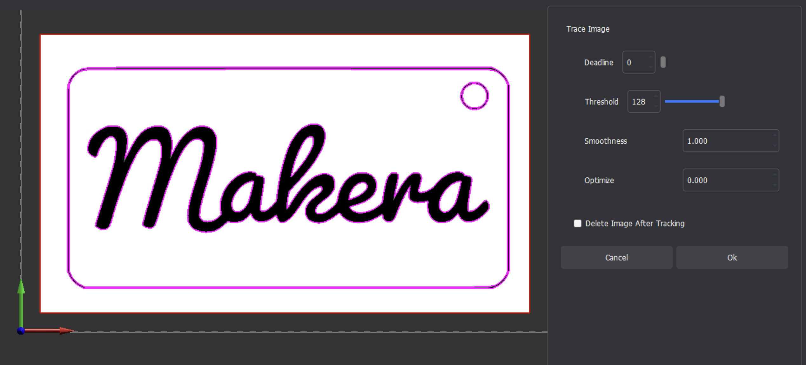
Les graphiques vectoriels convertis peuvent être utilisés directement pour les opérations de parcours d’outil vectoriel. Les images simples à fort contraste donnent les meilleurs résultats de décalquage.
Décalquer un contour 3D :
La fonction Décalquer un contour 3D peut générer des parcours de contour 2D autour des géométries détectées dans les fichiers de conception 3D STL / STEP.
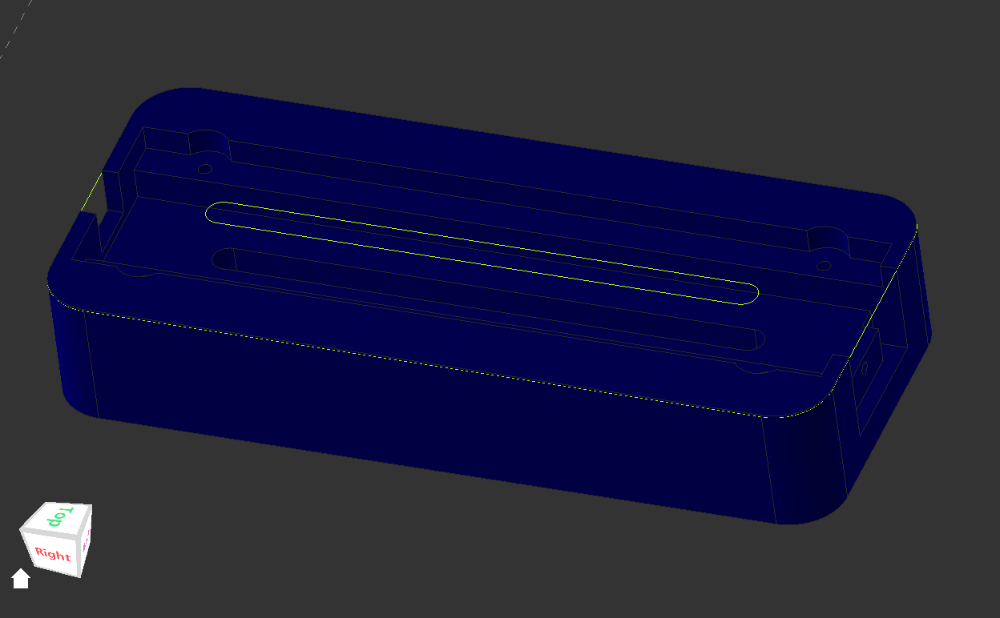
Les contours sont générés automatiquement à partir des caractéristiques géométriques détectées dans le modèle. Ces parcours 2D sont créés sur un nouveau calque dans la section Calques 2D du panneau des fonctions et peuvent être sélectionnés pour les opérations de parcours d’outil 2D ou de parcours laser. Vous pouvez également générer des parcours de contour dans les opérations de parcours d’outil 3D, comme expliqué plus loin dans ce guide.
Parcours d’outil 3 axes
Dans un projet 3 axes, un large éventail de parcours d’outil peut être créé à partir d’objets sélectionnés pour les opérations de fabrication. Les opérations 2D, 3D et laser permettent de créer divers processus de fabrication pour l’usinage 3 axes.
Techniques générales pour 3 axes
Avant d’aborder les stratégies de configuration de types précis de parcours d’outil, nous présentons les réglages généraux communs aux différentes techniques de création de parcours pour l’usinage 3 axes.
Paramètres d’usinage courants
Lors de la création d’un parcours d’outil, certains paramètres sont communs à plusieurs types de parcours. Ces paramètres comprennent :
- Nom du parcours d’outil :
- Le nom du parcours d’outil actuel.
- Profondeur de coupe :
- Profondeur de départ :
- La coordonnée Z 0 sert de référence. Elle est généralement détectée par le palpeur au point où l’outil touche le dessus du brut pour effectuer la coupe. Une valeur positive indique un décalage vers le bas de la coordonnée Z 0, et une valeur négative un décalage vers le haut.
- Profondeur de fin :
- La coordonnée Z 0 détectée par le palpeur sert de référence ; la profondeur de fin indique le point où l’outil termine la coupe. Une valeur positive indique un décalage vers le bas de la coordonnée Z 0, et une valeur négative un décalage vers le haut.
- Profondeur de la dernière passe :
- Profondeur de coupe de la dernière couche. Lorsque ce paramètre est activé, l’outil définit la profondeur de coupe de la dernière couche selon cette valeur.
- Profondeur de départ :
- Emplacements sûrs :
- Hauteur Z de sécurité :
- La coordonnée Z 0 détectée par le palpeur sert de référence pour la hauteur Z de sécurité de l’outil. Lorsque l’outil exécute la commande G0 de déplacement rapide, il remonte d’abord à la hauteur de sécurité, puis se déplace rapidement horizontalement.
- Position des coordonnées initiales d’usinage :
- L’outil se déplace d’abord vers la coordonnée X / Y de la position initiale d’usinage à la hauteur de sécurité, puis descend à la hauteur de coordonnée Z de cette position avant l’usinage.
- Hauteur Z de sécurité :
- Choisir un outil (Ajouter un outil)
- La bibliothèque d’outils s’ouvre pour vous permettre de sélectionner les informations de l’outil à utiliser pour le parcours d’outil. Sélectionnez sous la liste des outils les paramètres prédéfinis de traitement du matériau correspondants, puis cliquez sur Choisir pour confirmer la sélection de l’outil.
- Si l’outil est configuré avec les mêmes paramètres prédéfinis de matériau que le brut actuel, Makera CAM sélectionne automatiquement les paramètres correspondants en fonction du réglage actuel du brut. Par exemple, si le brut actuel est un alliage d’aluminium et que les paramètres de traitement de l’alliage d’aluminium sont activés dans l’outil sélectionné, l’entrée de ces paramètres est automatiquement sélectionnée.
- Paramètres de l’outil : Consultez la Speeds & Feeds page de notre wiki pour connaître les paramètres recommandés.
- Descente par passe :
- Profondeur de coupe de l’outil à chaque descente dans le matériau.
- Vitesse d’avance :
- Vitesse de déplacement horizontal de l’outil lors de la coupe du matériau.
- Vitesse de plongée :
- Vitesse de coupe descendante de l’outil dans la direction de l’axe Z lors de la coupe du matériau.
- Vitesse de rotation de la broche :
- Vitesse à laquelle l’outil tourne lorsqu’il coupe le matériau.
- Numéro de l’outil :
- Numéro de l’outil utilisé dans le parcours actuel. Lorsque plusieurs parcours conçus utilisent le même numéro d’outil, la machine ne déclenche pas le changement d’outil. Lors de la conception des parcours, veillez donc à attribuer des numéros différents aux différents outils.
- Avec la machine CNC de bureau Carvera équipée d’un changeur d’outils automatique, le numéro de l’outil correspond au numéro du porte-outil où l’outil est effectivement inséré dans le changeur automatique (1–6).
- Avec un appareil à changement d’outil manuel tel que la machine CNC de bureau Carvera Air, le numéro de l’outil correspond au numéro indiqué par la machine pour les pauses automatiques et les changements d’outil manuels.
- Numéro de l’outil utilisé dans le parcours actuel. Lorsque plusieurs parcours conçus utilisent le même numéro d’outil, la machine ne déclenche pas le changement d’outil. Lors de la conception des parcours, veillez donc à attribuer des numéros différents aux différents outils.
- Descente par passe :
- Stratégie :
- Décalage (décalage d’usinage) :
- À partir du contour graphique, le contour est décalé selon la distance indiquée. Une valeur positive décale vers le côté positif du traitement du contour graphique et une valeur négative vers le côté négatif.
- Direction de coupe :
- Peut être réglée en mode de fraisage en avalant ou en opposition
- Ordre de coupe :
- Automatique :
- La séquence d’usinage est planifiée automatiquement par le programme selon le principe de proximité du point de départ et de l’usinage le plus proche.
- Sélection :
- L’usinage suit l’ordre dans lequel l’utilisateur sélectionne manuellement les objets graphiques.
- De l’intérieur vers l’extérieur :
- Traiter selon l’ordre de combinaison des objets graphiques, de l’intérieur vers l’extérieur
- De l’extérieur vers l’intérieur :
- Traiter selon l’ordre de combinaison des objets graphiques, de l’extérieur vers l’intérieur
- Automatique :
- Décalage (décalage d’usinage) :
- Stratégie de rampe :
- Le réglage du biseau permet un contact plus progressif avec le matériau lors de l’usinage de matériaux durs. Il améliore la qualité d’usinage et réduit le risque d’endommager l’outil.
- Distance de rampe :
- Définit la distance de déplacement de la coupe en biseau. L’outil suit progressivement le contour graphique à la distance indiquée et selon un angle fixe. Lorsque cette distance est atteinte, si la profondeur de coupe n’est pas encore atteinte, il revient au point de départ et continue à avancer selon l’angle fixe jusqu’à atteindre la profondeur, puis se déplace horizontalement pour couper.
- Angle de rampe :
- Angle fixe :
- Utiliser un angle fixe pour couper en diagonale
- Angle automatique :
- Définit automatiquement l’angle selon la distance de rampe
- Hauteur Z de départ :
- Lors de la coupe de la première couche du parcours de biseau, la hauteur est décalée vers le haut selon la hauteur de départ définie.
- Angle fixe :
- Distance de rampe :
- Le réglage du biseau permet un contact plus progressif avec le matériau lors de l’usinage de matériaux durs. Il améliore la qualité d’usinage et réduit le risque d’endommager l’outil.
Stratégies imbriquées
Si vous sélectionnez plusieurs graphiques imbriqués sans intersection de contours lors du réglage des paramètres du parcours, le programme génère automatiquement les parcours selon les règles d’imbrication.
- Lors de l’utilisation des parcours d’outil Contour :
- Si la stratégie d’usinage est Extérieur :
- le contour sélectionné va de l’extérieur vers l’intérieur ; les couches de rang impair sont à l’extérieur et celles de rang pair à l’intérieur.
- Si la stratégie d’usinage est Intérieur :
- le contour sélectionné va de l’intérieur vers l’extérieur ; les couches impaires sont à l’intérieur et les couches paires à l’extérieur.
- Si la stratégie d’usinage est Sur le vecteur :
- Tous les contours sélectionnés sont des parcours Sur le vecteur.
- Si la stratégie d’usinage est Extérieur :
- Lors de l’utilisation des parcours d’outil Poche :
- L’objet sélectionné est imbriqué de l’extérieur vers l’intérieur ; la zone annulaire créée est dégagée dans les zones impaires et conservée dans les zones paires.
- Lors de l’utilisation des parcours d’outil Vecteur laser :
- La stratégie d’usinage est Ligne
- Distance d’indentation = 0
- Usinage laser le long du contour graphique
- Distance d’indentation > 0
- Le contour graphique va de l’extérieur vers l’intérieur ; les couches impaires sont à l’extérieur et les couches paires à l’intérieur.
- Distance d’indentation < 0
- Le contour graphique va de l’extérieur vers l’intérieur ; les couches impaires sont à l’intérieur et les couches paires à l’extérieur.
- Distance d’indentation = 0
- La stratégie d’usinage est Remplissage / remplissage décalé
- Le contour graphique est imbriqué de l’extérieur vers l’intérieur ; la zone annulaire créée est dégagée dans les zones impaires et conservée dans les zones paires.
- La stratégie d’usinage est Ligne
Parcours d’outil de poche 2D
Parcours d’outil de poche 2D (anciennement appelé Vector Pocket) servent à enlever le matériau des conceptions 2D sélectionnées, comme indiqué dans cette vidéo.
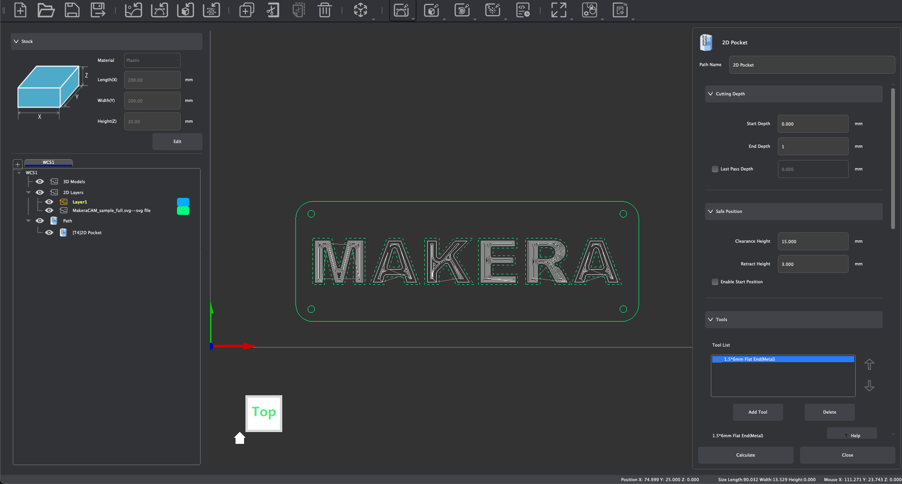
Pour créer des parcours d’outil de poche 2D, examinez et ajustez les paramètres suivants :
- Définir le nom du parcours d’outil
- Définir les paramètres de profondeur d’usinage
- Définir la hauteur de sécurité et la position de départ
- Sélectionner l’outil et modifier/confirmer ses paramètres d’usinage : Consultez la Speeds & Feeds page de notre wiki pour connaître les paramètres de coupe recommandés et par défaut.
- La poche 2D prend en charge plusieurs combinaisons d’outils pour retirer le matériau. Lors de la sélection d’un outil, choisissez une combinaison adaptée à la taille de la zone à dégager dans la conception 2D sélectionnée. Le programme utilise les outils indiqués de haut en bas dans la liste pour enlever le matériau selon la combinaison finale sélectionnée.
- Selon les règles de dégagement multi-outils, il est recommandé de classer la combinaison de haut en bas, des plus grands aux plus petits diamètres de pointe. Les grands outils retirent d’abord rapidement la majeure partie du matériau. Dans les zones de la poche où ils ne peuvent pas entrer, les petits outils poursuivent le dégagement jusqu’à satisfaire complètement les exigences de la conception 2D sélectionnée.
- Remarque : lors du dégagement multi-outils, il est recommandé de combiner des outils ayant le même diamètre de queue afin d’éviter de remplacer la pince de la broche. Vérifiez également que les numéros d’outil sont différents, comme indiqué précédemment.
- Définir la stratégie de parcours :
- Décalage :
- Enlèvement du matériau à l’aide de parcours fermés imbriqués
- De l’extérieur vers l’intérieur :
- Le parcours d’usinage va du contour extérieur vers le centre de la conception 2D sélectionnée
- De l’intérieur vers l’extérieur :
- Le parcours d’usinage va du centre de la conception 2D sélectionnée vers son contour extérieur
- De l’extérieur vers l’intérieur :
- Enlèvement du matériau à l’aide de parcours fermés imbriqués
- Parallèle :
- Enlèvement du matériau par opération de lignes en va-et-vient
- Avant vers arrière :
- Le parcours d’usinage va du point de départ au point final
- Arrière vers avant :
- Le parcours d’usinage va du point final au point de départ
- Avant vers arrière :
- Enlèvement du matériau par opération de lignes en va-et-vient
- Décalage :
- Définir la direction de coupe : Conventionnel ou en avalant
- Définir l’ordre de coupe : Automatique, sélection, intérieur vers extérieur, extérieur vers intérieur
- Définir la stratégie de rampe (facultatif)
- Cliquez sur [Calculer] pour terminer le calcul du parcours d’outil et générer un aperçu du parcours créé.
Parcours d’outil de contour 2D
Parcours d’outil de contour 2D (anciennement appelé Vector Contour) peuvent servir à créer des coupes le long des bords ou contours de fichiers de conception 2D, comme indiqué dans cette vidéo.
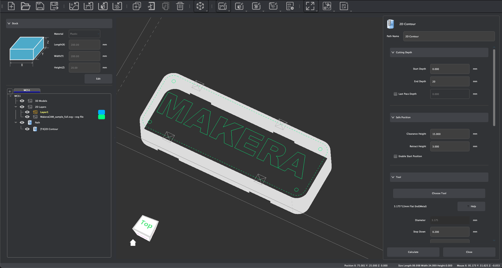
Pour créer des parcours d’outil de contour 2D, examinez et ajustez les paramètres suivants :
- Définir le nom du parcours d’outil
- Définir les paramètres de profondeur d’usinage
- Définir la hauteur de sécurité et la position de départ
- Sélectionner l’outil et modifier/confirmer ses paramètres d’usinage. Consultez la Speeds & Feeds page de notre wiki pour connaître les paramètres de coupe recommandés et par défaut.
- Définir la stratégie d’usinage :
- Intérieur :
- Le contour extérieur créé par l’outil est usiné le long du côté intérieur du parcours 2D sélectionné. Si les parcours 2D sélectionnés se croisent, aucun parcours d’outil n’est généré.
- Extérieur :
- Le contour intérieur créé par la coupe est usiné le long du côté extérieur du parcours 2D sélectionné. Si les parcours 2D sélectionnés se croisent, aucun parcours d’outil n’est généré.
- Sur le vecteur :
- L’axe de l’outil est usiné le long de la ligne de contour du parcours 2D sélectionné.
- Décalage :
- Permet d’ajuster la position de l’outil de coupe par rapport à la stratégie de parcours sélectionnée
- Intérieur :
- Définir la direction de coupe : Conventionnel ou en avalant
- Définir l’ordre de coupe : Automatique, sélection, intérieur vers extérieur, extérieur vers intérieur
- Définir les paramètres de rampe (facultatif)
- Envisagez d’activer les supports :
- Les supports peuvent être activés et ajoutés le long des bords de la coupe de contour pour maintenir le matériau et l’empêcher de se détacher du brut pendant l’usinage. Ils restent en place et peuvent être coupés manuellement après l’usinage. Ils ne sont pas activés par défaut ; sélectionnez Personnalisé pour activer les supports.
- Définir les paramètres des supports :
- Sélectionner la forme du support : triangle ou rectangle
- Définir la largeur du support : Définit la largeur horizontale du support créé, qui ne sera pas coupée.
- Définir l’épaisseur du support : La profondeur de fin sert de référence ; la hauteur de la zone non coupée est conservée sur l’axe Z.
- Cliquez sur [Ajouter] pour passer en mode d’ajout manuel de supports :
- Cliquez avec le bouton gauche à l’endroit où vous souhaitez créer un support sur le contour de votre parcours 2D sélectionné. Après l’ajout, sa position est marquée sur le contour graphique. Plusieurs supports peuvent être ajoutés successivement.
- Dans le mode Ajouter , cliquez avec le bouton gauche sur le centre du repère de support créé pour supprimer le support correspondant.
- Lorsque vous avez terminé, cliquez sur [Quitter].
- Cliquez sur [Effacer] pour supprimer d’un coup tous les supports du parcours actuel.
- Cliquez sur [Ajouter] pour passer en mode d’ajout manuel de supports :
- Définir les paramètres des supports :
- Les supports peuvent être activés et ajoutés le long des bords de la coupe de contour pour maintenir le matériau et l’empêcher de se détacher du brut pendant l’usinage. Ils restent en place et peuvent être coupés manuellement après l’usinage. Ils ne sont pas activés par défaut ; sélectionnez Personnalisé pour activer les supports.
- Cliquez sur [Calculer] pour terminer le calcul du parcours d’outil et afficher un aperçu du parcours généré.
Parcours d’outil de perçage 2D
Parcours d’outil de perçage 2D (anciennement appelé Vector Drilling) permet de réaliser des opérations de perçage selon le centre de l’objet 2D sélectionné, comme indiqué dans cette vidéo.
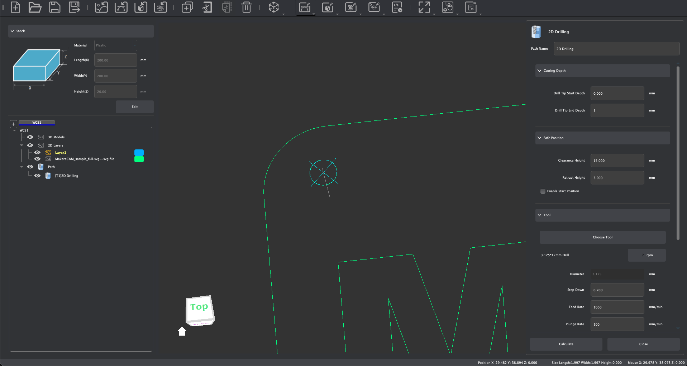
Le diamètre de perçage créé dépend du diamètre de l’outil sélectionné et non de la taille de la limite du parcours 2D sélectionné. Pour créer des parcours d’outil de perçage 2D, examinez et ajustez les paramètres suivants :
- Définir le nom du parcours d’outil
- Définir les paramètres de profondeur de coupe
- Définir la hauteur de sécurité et la position de départ
- Sélectionner l’outil (foret) et modifier/confirmer ses paramètres d’usinage. Consultez la Speeds & Feeds page de notre wiki pour connaître les paramètres de coupe recommandés et par défaut.
- Sélectionner une stratégie de retrait :
- Aucune :
- Aucune stratégie particulière ; l’outil perce directement jusqu’à la profondeur de fin selon les paramètres définis
- Hauteur Z fixe :
- En prenant la profondeur de départ comme référence, l’outil descend à la profondeur de coupe définie, puis remonte à une hauteur fixe au-dessus de la profondeur de départ selon la hauteur de retrait définie.
- Retrait relatif :
- À chaque descente à la profondeur de coupe définie, l’outil remonte d’une hauteur relative correspondant à la distance définie par rapport à sa position actuelle.
- Aucune :
- Cliquez sur [Calculer] pour terminer le calcul du parcours d’outil et générer un aperçu de ce parcours.
Parcours d’outil de filetage par fraisage 2D
Les parcours d’outil de filetage par fraisage 2D permettent d’effectuer des opérations de filetage sur les objets 2D sélectionnés et percés, comme indiqué dans cette vidéo.
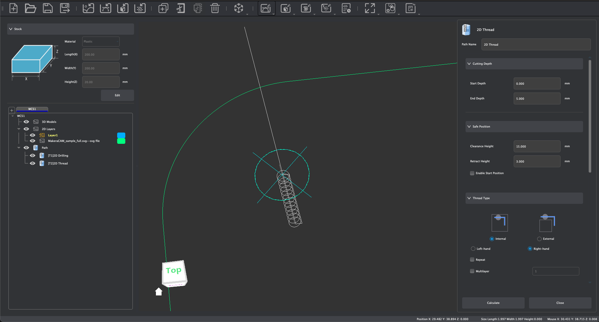
La taille du filetage créé dépend de l’outil de coupe sélectionné et du diamètre du trou créé par une opération de perçage précédente, et non de la taille de la limite du parcours 2D sélectionné. L’objet 2D sélectionné doit déjà avoir fait l’objet d’une opération de perçage 2D avant la création d’un parcours de filetage par fraisage 2D.
Pour créer des parcours d’outil de filetage par fraisage 2D, examinez et ajustez les paramètres suivants :
- Définir le nom du parcours d’outil
- Définir les paramètres de profondeur d’usinage
- Définir la hauteur de sécurité et la position de départ
- Sélectionner le type de filetage :
- Interne :
- Crée des filetages le long des limites intérieures d’un trou cylindrique.
- Externe :
- Crée des filetages le long des limites extérieures d’un objet cylindrique.
- À gauche / à droite :
- Choisir le sens du filetage
- Répéter :
- Répète l’opération de filetage par fraisage avec les paramètres sélectionnés
- Multicouche :
- Crée plusieurs passes de filetage selon le paramètre défini. La valeur par défaut est 1.
- Interne :
- Sélectionner l’outil (fraise à fileter) et modifier/confirmer ses paramètres d’usinage. Consultez la Speeds & Feeds page de notre wiki pour connaître les paramètres de coupe recommandés et par défaut.
- Cliquez sur [Calculer] pour terminer le calcul du parcours d’outil et générer un aperçu de ce parcours.
Parcours d’outil de chanfrein 2D
Les parcours d’outil de chanfrein 2D permettent de créer des coupes chanfreinées le long des bords ou contours de fichiers de conception 2D, comme indiqué dans cette vidéo.
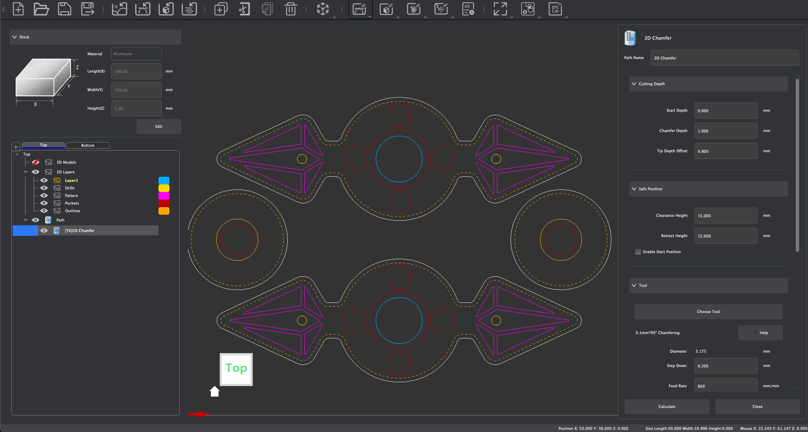
Dans les versions précédentes de Makera CAM, les opérations de chanfrein 2D étaient créées avec un parcours de contour 2D, ce qui reste possible. Pour plus de simplicité, utilisez l’opération de parcours de contour 2D et examinez les paramètres suivants :
- Définir le nom du parcours d’outil
- Définir les paramètres de profondeur de départ
- Définir la profondeur de chanfrein :
- Détermine la profondeur de coupe du chanfrein et donc la hauteur totale du bord chanfreiné.
- Définir le décalage de profondeur de pointe :
- Décale la pointe de la fraise à chanfreiner par rapport au parcours 2D sélectionné.
- Définir la hauteur de sécurité et la position de départ
- Sélectionner un outil de chanfrein et modifier/confirmer ses paramètres d’usinage. Consultez la Speeds & Feeds page de notre wiki pour connaître les paramètres de coupe recommandés et par défaut.
- Définir la stratégie d’usinage :
- Intérieur :
- Le contour de chanfrein créé par l’outil est usiné sur le côté intérieur du parcours 2D sélectionné. Si les parcours sélectionnés se croisent, aucun parcours d’outil n’est généré.
- Extérieur :
- Le contour de chanfrein créé par la coupe est usiné sur le côté extérieur du parcours 2D sélectionné. Si les parcours sélectionnés se croisent, aucun parcours d’outil n’est généré.
- Intérieur :
- Définir la direction de coupe : Conventionnel ou en avalant
- Cliquez sur [Calculer] pour terminer le calcul du parcours d’outil et afficher un aperçu du parcours généré.
Parcours d’outil de relief 3D
Parcours d’outil de relief 3D servent à créer des opérations d’usinage concaves et convexes autour des caractéristiques géométriques d’un fichier de maillage 3D importé (.STL), comme indiqué dans cette vidéo.
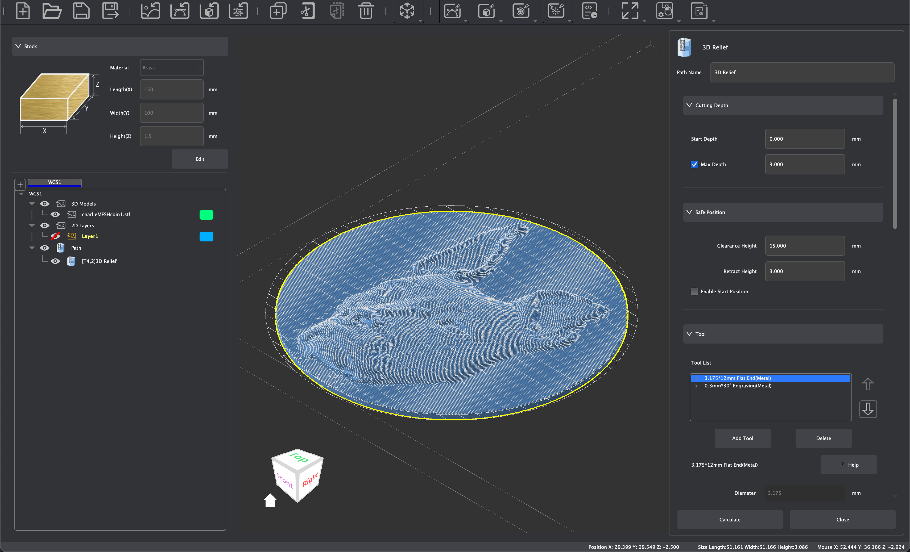
Pour créer des parcours d’outil de relief 3D, examinez et ajustez les paramètres suivants :
- Définir le nom du parcours d’outil
- Définir la profondeur de départ
- Profondeur maximale :
- Lorsque cette option est cochée, le relief est usiné jusqu’à une profondeur définie plutôt que jusqu’au bas du modèle.
- Définir la hauteur de sécurité et la position de départ
- Sélectionner l’outil et modifier/confirmer ses paramètres d’usinage : Consultez la Speeds & Feeds page de notre wiki pour connaître les paramètres de coupe recommandés et par défaut.
- Le relief 3D prend en charge plusieurs combinaisons d’outils pour retirer le matériau. Choisissez une combinaison adaptée à la taille de la zone à dégager du modèle 3D sélectionné. Le programme utilise les outils indiqués de haut en bas pour enlever le matériau selon la combinaison finale.
- Selon les règles de dégagement multi-outils, il est recommandé de classer la combinaison des plus grands aux plus petits diamètres de pointe. Les grands outils retirent rapidement la majeure partie du matériau ; les petits outils dégagent ensuite les zones auxquelles ils peuvent accéder jusqu’à satisfaire les exigences du modèle 3D.
- Remarque : lors du dégagement multi-outils, il est recommandé de combiner des outils ayant le même diamètre de queue afin d’éviter de remplacer la pince de la broche. Vérifiez également que les numéros d’outil sont différents, comme indiqué précédemment.
- Descente par passe :
- Comme expliqué précédemment, ce paramètre définit la profondeur de coupe par passe. Avec le relief 3D et le dégagement multi-matériau, vous pouvez définir une descente par passe propre à chaque outil et la désactiver pour une passe de finition après le dégagement du matériau.
- Surépaisseur de profondeur :
- Ajuste la quantité de brut laissée pendant l’usinage. La valeur par défaut est 0 mm, ce qui usine jusqu’à la profondeur définie.
- Définir la limite de traitement :
- Limite du modèle :
- Le relief est créé à l’intérieur des limites du modèle 3D sélectionné
- Limite du matériau :
- Le relief est créé à l’intérieur des limites du brut
- Vecteur(s) sélectionné(s) :
- Le relief est créé dans les parcours vectoriels 2D sélectionnés comme limites.
- Décalage de limite :
- Ajuste la zone dégagée selon les options de limite de traitement sélectionnées.
- Limite du modèle :
- Définir la stratégie de parcours :
- Décalage
- Enlèvement du matériau à l’aide de parcours fermés imbriqués
- De l’extérieur vers l’intérieur :
- Le parcours d’usinage va du contour extérieur vers le centre du modèle 3D sélectionné
- De l’intérieur vers l’extérieur :
- Le parcours d’usinage va du centre du modèle 3D sélectionné vers son contour extérieur
- De l’extérieur vers l’intérieur :
- Enlèvement du matériau à l’aide de parcours fermés imbriqués
- Parallèle :
- Enlèvement du matériau par opération de lignes en va-et-vient
- Avant vers arrière :
- Le parcours d’usinage va du point de départ au point final
- Arrière vers avant :
- Le parcours d’usinage va du point final au point de départ
- Avant vers arrière :
- Enlèvement du matériau par opération de lignes en va-et-vient
- Décalage
- Définir la stratégie de rampe (facultatif)
- Cliquez sur [Calculer] pour terminer le calcul du parcours d’outil et générer un aperçu du parcours créé.
Parcours d’outil de poche 3D
Parcours d’outil de poche 3D servent à dégager le matériau de modèles 3D sélectionnés au format STEP, comme indiqué dans cette vidéo.
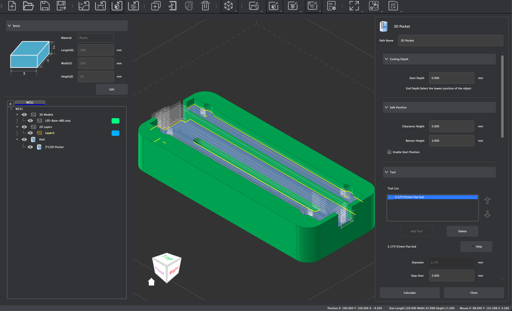
Pour créer des parcours d’outil de poche 3D, sélectionnez d’abord les faces à dégager dans votre modèle 3D ; plusieurs faces peuvent être sélectionnées à la fois. Examinez ensuite les paramètres suivants :
- Définir le nom du parcours d’outil
- Définir la profondeur de départ de l’usinage, en sachant que la profondeur de fin est déterminée par les faces sélectionnées du modèle 3D.
- Définir la hauteur de sécurité et la position de départ
- Sélectionner l’outil et modifier/confirmer ses paramètres d’usinage : Consultez la Speeds & Feeds page de notre wiki pour connaître les paramètres de coupe recommandés et par défaut.
- La poche 3D prend en charge plusieurs combinaisons d’outils pour retirer le matériau. Choisissez une combinaison adaptée à la taille de la zone à dégager du modèle 3D sélectionné. Le programme utilise les outils indiqués de haut en bas selon la combinaison finale.
- Selon les règles de dégagement multi-outils, classez la combinaison des plus grands aux plus petits diamètres de pointe. Les grands outils retirent rapidement la majeure partie du matériau, puis les petits outils dégagent les zones auxquelles les grands outils n’accèdent pas jusqu’à satisfaire les exigences du modèle 3D.
- Remarque : lors du dégagement multi-outils, il est recommandé de combiner des outils ayant le même diamètre de queue afin d’éviter de remplacer la pince de la broche. Vérifiez également que les numéros d’outil sont différents, comme indiqué précédemment.
- Descente par passe :
- Comme expliqué précédemment, ce paramètre définit la profondeur de coupe par passe. Avec la poche 3D et le dégagement multi-matériau, vous pouvez définir une descente par passe propre à chaque outil et la désactiver pour une passe de finition après le dégagement du matériau.
- Définir la stratégie de parcours :
- Décalage
- Enlèvement du matériau à l’aide de parcours fermés imbriqués
- De l’extérieur vers l’intérieur :
- Le parcours d’usinage va du contour extérieur vers le centre du modèle 3D sélectionné
- De l’intérieur vers l’extérieur :
- Le parcours d’usinage va du centre du modèle 3D sélectionné vers son contour extérieur
- De l’extérieur vers l’intérieur :
- Enlèvement du matériau à l’aide de parcours fermés imbriqués
- Parallèle :
- Enlèvement du matériau par opération de lignes en va-et-vient
- Avant vers arrière :
- Le parcours d’usinage va du point de départ au point final
- Arrière vers avant :
- Le parcours d’usinage va du point final au point de départ
- Avant vers arrière :
- Enlèvement du matériau par opération de lignes en va-et-vient
- Décalage
- Définir la direction de coupe : Conventionnel ou en avalant
- Définir l’ordre de coupe : Automatique, sélection, intérieur vers extérieur, extérieur vers intérieur
- Définir le confinement de l’outil :
- Limite intérieure :
- Pendant le dégagement, l’outil de coupe ne peut pas usiner à l’extérieur du modèle 3D sélectionné
- Limite extérieure :
- Pendant le dégagement, l’outil de coupe peut usiner au-delà de la limite extérieure du modèle 3D sélectionné
- Limite intérieure :
- Définir la stratégie de rampe (facultatif)
- Cliquez sur [Calculer] pour terminer le calcul du parcours d’outil et générer un aperçu du parcours créé.
Parcours d’outil de contour 3D
Les parcours d’outil de contour 3D permettent de créer des coupes le long de parcours de contour générés à partir de modèles 3D (STL / STEP), comme indiqué dans cette vidéo.
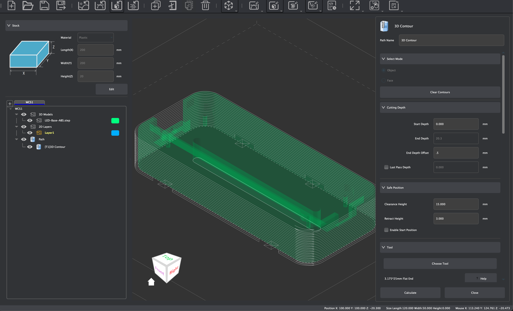
Pour créer des parcours d’outil de contour 3D, vous devez d’abord générer des parcours de contour 2D pouvant être sélectionnés pour cette opération. Comme expliqué précédemment dans la Décalquer section de ce guide, cette tâche peut être effectuée avec la fonction Décalquer un contour 3D accessible depuis les menus d’édition et de transformation. Vous pouvez également effectuer cette opération depuis le menu Parcours d’outil de contour 3D du panneau des propriétés étendues :
- Mode de sélection :
- Objet :
- Lorsque cette option est choisie, vous pouvez sélectionner un modèle 3D autour duquel générer des parcours de contour. Elle convient pour générer le périmètre extérieur autour du bord inférieur d’un fichier STEP ou STL importé.
- Face :
- Lorsque cette option est choisie, vous pouvez sélectionner une ou plusieurs faces d’un fichier STEP importé pour générer des parcours de contour autour d’elles. Elle convient aux profils intérieurs, poches, trous ou bords à usiner avec des parcours de contour.
- Après avoir choisi un mode et effectué votre sélection, appuyez sur [Générer les contours] pour générer automatiquement les parcours autour du modèle 3D. Une fois les contours générés, vous pouvez appuyer sur [Effacer les contours] pour supprimer les contours générés et effectuer une nouvelle sélection.
- Objet :
Une fois les contours générés, examinez et ajustez les paramètres suivants pour créer des parcours de contour 3D :
- Définir le nom du parcours d’outil
- Définir la profondeur de départ
- Définir la profondeur de fin :
- Profondeur de fin :
- Est automatiquement déterminée à partir du contour sélectionné généré depuis le modèle 3D sélectionné.
- Décalage de profondeur de fin :
- Ce paramètre permet d’usiner au-dessus ou au-dessous de la profondeur de fin définie automatiquement par le parcours de contour sélectionné.
- Profondeur de fin :
- Définir la profondeur de la dernière passe (facultatif)
- Définir la hauteur de sécurité et la position de départ
- Sélectionner l’outil et modifier/confirmer ses paramètres d’usinage. Consultez la Speeds & Feeds page de notre wiki pour connaître les paramètres de coupe recommandés et par défaut.
- Définir la stratégie de traitement de la position :
- Intérieur :
- Le contour extérieur créé par l’outil est usiné sur le côté intérieur du parcours sélectionné. Si plusieurs parcours sélectionnés se croisent, aucun parcours d’outil n’est généré.
- Extérieur :
- Le contour intérieur créé par la coupe est usiné sur le côté extérieur du parcours sélectionné. Si plusieurs parcours sélectionnés se croisent, aucun parcours d’outil n’est généré.
- Sur le vecteur :
- L’axe de l’outil est usiné le long de la ligne du parcours de contour sélectionné.
- Décalage :
- Permet d’ajuster la position de l’outil de coupe par rapport à la stratégie de parcours sélectionnée
- Intérieur :
- Définir la direction de coupe : Conventionnel ou en avalant
- Définir l’ordre de coupe : Automatique, sélection, intérieur vers extérieur, extérieur vers intérieur
- Définir les paramètres de rampe (facultatif)
- Envisagez d’activer les supports :
- Les supports peuvent être activés et ajoutés le long des bords de la coupe de contour pour maintenir le matériau et l’empêcher de se détacher du brut pendant l’usinage. Ils restent en place et peuvent être coupés manuellement après l’usinage. Ils ne sont pas activés par défaut ; sélectionnez Personnalisé pour activer les supports.
- Définir les paramètres des supports :
- Sélectionner la forme du support : triangle ou rectangle
- Définir la largeur du support : Définit la largeur horizontale du support créé, qui ne sera pas coupée.
- Définir l’épaisseur du support : La profondeur de fin sert de référence ; la hauteur de la zone non coupée est conservée sur l’axe Z.
- Cliquez sur [Ajouter] pour passer en mode d’ajout manuel de supports :
- Cliquez avec le bouton gauche à l’endroit où vous souhaitez créer un support sur le contour sélectionné. Après l’ajout, sa position est marquée sur le contour graphique. Plusieurs supports peuvent être ajoutés successivement.
- Dans le mode Ajouter , cliquez avec le bouton gauche sur le centre du repère de support créé pour supprimer le support correspondant.
- Lorsque vous avez terminé, cliquez sur [Quitter].
- Cliquez sur [Effacer] pour supprimer d’un coup tous les supports du parcours actuel.
- Cliquez sur [Ajouter] pour passer en mode d’ajout manuel de supports :
- Définir les paramètres des supports :
- Les supports peuvent être activés et ajoutés le long des bords de la coupe de contour pour maintenir le matériau et l’empêcher de se détacher du brut pendant l’usinage. Ils restent en place et peuvent être coupés manuellement après l’usinage. Ils ne sont pas activés par défaut ; sélectionnez Personnalisé pour activer les supports.
- Cliquez sur [Calculer] pour terminer le calcul du parcours d’outil et afficher un aperçu du parcours généré.
Parcours d’outil de perçage 3D
Les parcours d’outil de perçage 3D permettent de créer des opérations de perçage à partir de faces sélectionnées d’un modèle 3D importé au format STEP, comme indiqué dans cette vidéo.
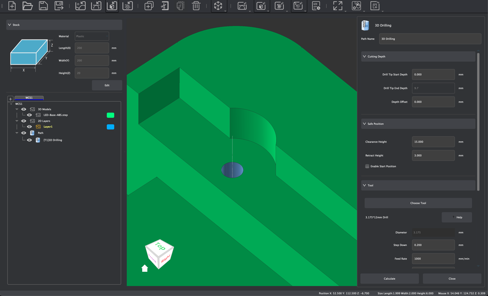
Vous pouvez créer des parcours de perçage 3D à partir du centre des faces sélectionnées. Vous pouvez sélectionner la face inférieure circulaire plane d’un trou ou ses parois cylindriques. Plusieurs faces peuvent être sélectionnées à la fois pour créer plusieurs trous avec les mêmes paramètres. Le diamètre créé dépend du diamètre de l’outil, et non de la taille de la face 3D sélectionnée. Pour créer des parcours de perçage 3D, examinez et ajustez les paramètres suivants :
- Définir le nom du parcours d’outil
- Définir les paramètres de profondeur d’usinage
- Profondeur de fin de la pointe du foret
- Déterminée automatiquement selon les faces sélectionnées du modèle 3D
- Décalage de profondeur :
- Permet de percer au-dessus ou au-dessous de la profondeur de fin de la pointe, déterminée automatiquement.
- Profondeur de fin de la pointe du foret
- Définir la hauteur de sécurité et la position de départ
- Sélectionner l’outil (foret) et modifier/confirmer ses paramètres d’usinage. Consultez la Speeds & Feeds page de notre wiki pour connaître les paramètres de coupe recommandés et par défaut.
- Définir la stratégie d’usinage :
- Aucune :
- Aucune stratégie particulière ; l’outil perce directement jusqu’à la profondeur de fin selon les paramètres définis
- Hauteur Z fixe :
- En prenant la profondeur de départ comme référence, l’outil descend à la profondeur de coupe définie, puis remonte à une hauteur fixe au-dessus de la profondeur de départ selon la hauteur de retrait définie.
- Retrait relatif :
- À chaque descente à la profondeur de coupe définie, l’outil remonte d’une hauteur relative correspondant à la distance définie par rapport à sa position actuelle.
- Aucune :
- Cliquez sur [Calculer] pour terminer le calcul du parcours d’outil et générer un aperçu de ce parcours.
Parcours d’outil de filetage par fraisage 3D
Les parcours d’outil de filetage par fraisage 3D permettent des opérations de filetage selon les faces percées sélectionnées d’un modèle 3D importé au format STEP, comme indiqué dans cette vidéo.
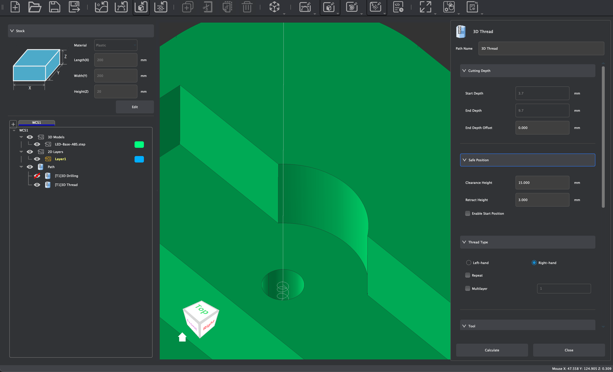
La taille du filetage créé dépend de l’outil de coupe sélectionné et du diamètre du trou créé par un parcours de perçage précédent pour les faces sélectionnées du modèle 3D. Vous devez sélectionner les faces cylindriques d’un trou dans le modèle ; plusieurs faces peuvent être sélectionnées pour créer plusieurs opérations de filetage avec les mêmes paramètres. La face 3D sélectionnée doit déjà avoir fait l’objet d’une opération de perçage 3D avant la création du parcours de filetage par fraisage 3D.
Pour créer des parcours de filetage par fraisage 3D, examinez et ajustez les paramètres suivants :
- Définir le nom du parcours d’outil
- Définir les paramètres de profondeur d’usinage
- Profondeur de fin
- Déterminée automatiquement selon les faces sélectionnées du modèle 3D
- Décalage de profondeur :
- Permet de fraiser au-dessus ou au-dessous de la profondeur de fin déterminée automatiquement.
- Profondeur de fin
- Définir la hauteur de sécurité et la position de départ
- Sélectionner le type de filetage :
- Interne :
- Crée des filetages le long des limites intérieures d’un trou cylindrique.
- Externe :
- Crée des filetages le long des limites extérieures d’un objet cylindrique.
- À gauche / à droite :
- Choisir le sens du filetage
- Répéter :
- Répète l’opération de filetage par fraisage avec les paramètres sélectionnés
- Multicouche :
- Crée plusieurs passes de filetage selon le paramètre défini. La valeur par défaut est 1.
- Interne :
- Sélectionner l’outil (fraise à fileter) et modifier/confirmer ses paramètres d’usinage. Consultez la Speeds & Feeds page de notre wiki pour connaître les paramètres de coupe recommandés et par défaut.
- Cliquez sur [Calculer] pour terminer le calcul du parcours d’outil et générer un aperçu de ce parcours.
Parcours d’outil de chanfrein 3D
Les parcours d’outil de chanfrein 3D permettent de créer des coupes chanfreinées le long des bords ou contours de modèles 3D, comme indiqué dans cette vidéo.
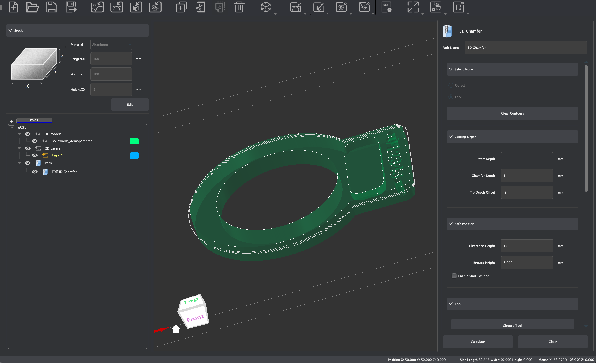
Pour créer des parcours d’outil de chanfrein 3D, il faut d’abord générer des parcours de contour 2D pouvant être sélectionnés pour cette opération. Comme expliqué précédemment dans la Décalquer section de ce guide, cette tâche peut être effectuée avec la fonction Décalquer un contour 3D fonction accessible depuis les menus d’édition et de transformation. Vous pouvez également effectuer cette opération depuis le menu Parcours d’outil de chanfrein 3D du panneau des propriétés étendues :
- Mode de sélection :
- Objet :
- Lorsque cette option est choisie, vous pouvez sélectionner un modèle 3D autour duquel générer des parcours de contour. Elle convient pour générer le périmètre extérieur autour du bord inférieur d’un fichier STEP ou STL importé, par exemple pour créer un parcours de contour 3D qui détoure une pièce.
- Face :
- Lorsque cette option est choisie, vous pouvez sélectionner une ou plusieurs faces d’un fichier STEP importé pour générer des contours autour d’elles. Elle convient aux profils intérieurs, poches, trous ou bords à usiner, par exemple lors de la création d’un parcours de chanfrein 3D.
- Après avoir choisi un mode et effectué votre sélection, appuyez sur [Générer les contours] pour générer automatiquement les parcours autour du modèle 3D. Une fois les contours générés, vous pouvez appuyer sur [Effacer les contours] pour supprimer les contours générés et effectuer une nouvelle sélection.
- Objet :
Une fois les contours générés, sélectionnez ceux à chanfreiner, puis examinez et ajustez les paramètres suivants pour créer des parcours de chanfrein 3D :
- Définir le nom du parcours d’outil
- Définir les paramètres de profondeur de départ
- Définir la profondeur de chanfrein :
- Détermine la profondeur de coupe du chanfrein et donc la hauteur totale du bord chanfreiné.
- Définir le décalage de profondeur de pointe :
- Décale la pointe de la fraise à chanfreiner par rapport au parcours de contour sélectionné.
- Définir la hauteur de sécurité et la position de départ
- Sélectionner un outil de chanfrein et modifier/confirmer ses paramètres d’usinage. Consultez la Speeds & Feeds page de notre wiki pour connaître les paramètres de coupe recommandés et par défaut.
- Définir la stratégie de traitement de la position :
- Intérieur :
- Le contour de chanfrein créé par l’outil est usiné sur le côté intérieur du parcours 2D sélectionné. Si les parcours sélectionnés se croisent, aucun parcours d’outil n’est généré.
- Extérieur :
- Le contour de chanfrein créé par la coupe est usiné sur le côté extérieur du parcours 2D sélectionné. Si les parcours sélectionnés se croisent, aucun parcours d’outil n’est généré.
- Intérieur :
- Définir la direction de coupe : Conventionnel ou en avalant
- Cliquez sur [Calculer] pour terminer le calcul du parcours d’outil et afficher un aperçu du parcours généré.
Parcours d’outil vectoriel laser
Les opérations de parcours vectoriel laser utilisent des modules de gravure laser pour tracer ou remplir des graphiques vectoriels sélectionnés.
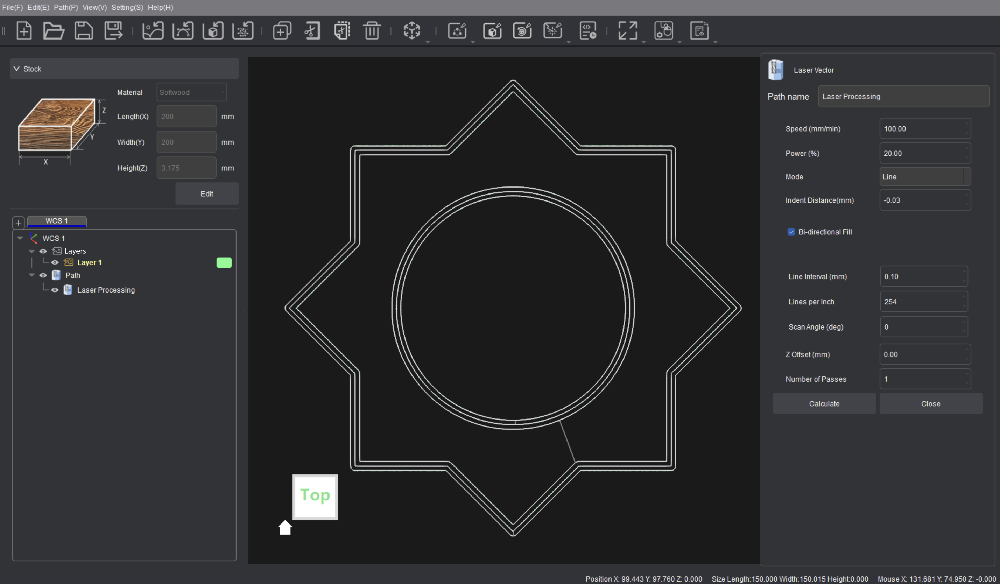
Pour créer des opérations de parcours vectoriel laser, examinez et ajustez les paramètres suivants :
- Définir le nom du parcours d’outil
- Vitesse :
- Ajuster la vitesse de déplacement du traitement laser ; consultez la Speeds & Feeds page de notre wiki pour connaître les paramètres recommandés selon les matériaux compatibles.
- Puissance :
- Ajuster la puissance de sortie du traitement laser ; consultez la Speeds & Feeds page de notre wiki pour connaître les paramètres recommandés selon les matériaux compatibles.
- Mode :
- Ligne :
- Graver le long du contour d’un graphique vectoriel (tracé)
- Remplissage :
- Utiliser des lignes parallèles pour remplir l’intérieur du graphique vectoriel
- Remplissage décalé :
- Suivre le contour du graphique vectoriel et le décaler vers l’intérieur pour remplir l’intérieur selon le paramètre défini
- Ligne :
- Distance d’indentation :
- Définit la distance de décalage du traitement. Il est recommandé d’effectuer le décalage uniquement à l’intérieur des graphiques
- Remplissage bidirectionnel :
- Active le remplissage bidirectionnel pour fournir une technique de traitement plus efficace
- Intervalle entre les lignes / lignes par pouce :
- Définir l’intervalle de balayage du parcours laser pour ajuster la résolution de gravure
- Angle de balayage :
- Lorsque ce mode est réglé sur Remplissage, vous pouvez définir l’angle de déplacement de balayage des lignes parallèles
- Décalage Z :
- Définir le décalage sur l’axe Z
- Nombre de passes :
- Définir le nombre de répétitions d’usinage pour ce parcours d’outil
- Cliquez sur [Calculer] pour terminer le calcul du parcours d’outil et générer un aperçu de ce parcours.
Parcours d’outil d’image laser
Les opérations de parcours d’image laser utilisent des modules de gravure laser pour graver des graphiques matriciels ou vectoriels sélectionnés au moyen d’une technique de gravure matricielle par points.
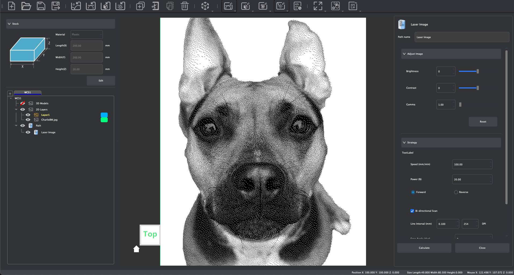
Pour créer des opérations de parcours d’outil d’image laser, examinez et ajustez les paramètres suivants :
- Définir le nom du parcours d’outil
- Ajuster l’image :
- Utiliser des paramètres simples pour modifier la luminosité, le contraste et le gamma d’une photographie afin d’obtenir des résultats de gravure optimaux.
- Vitesse :
- Ajuster la vitesse de déplacement du traitement laser ; consultez la Speeds & Feeds page de notre wiki pour connaître les paramètres recommandés selon les matériaux compatibles.
- Puissance :
- Ajuster la puissance de sortie du traitement laser ; consultez la Speeds & Feeds page de notre wiki pour connaître les paramètres recommandés selon les matériaux compatibles.
- Avant / arrière :
- Définir la direction du traitement laser
- Balayage bidirectionnel :
- Active le balayage bidirectionnel pour fournir une technique de traitement plus efficace
- Intervalle entre les lignes :
- Définir l’intervalle de balayage du parcours laser pour ajuster la résolution de gravure
- Angle de balayage :
- Définir l’angle de déplacement du balayage
- Décalage Z :
- Définir le décalage sur l’axe Z
- Nombre de passes :
- Définir le nombre de répétitions d’usinage pour ce parcours d’outil
- Cliquez sur [Calculer] pour terminer le calcul du parcours d’outil et générer un aperçu de ce parcours.
Parcours d’outil 4 axes
Dans un projet 4 axes, vous pouvez utiliser Makera CAM pour préparer des modèles 3D importés destinés à l’usinage rotatif lorsque Carvera et Carvera Air sont configurées avec le module optionnel du quatrième axe.
Techniques générales pour 4 axes
Avant d’aborder les stratégies de configuration des différents types de parcours rotatifs, nous présentons les réglages généraux communs aux techniques de création de parcours pour l’usinage 4 axes.
Ajuster le brut
Comme expliqué précédemment dans la Présentation du brut section de ce guide, les paramètres de configuration du brut dans un projet 4 axes diffèrent légèrement de ceux d’un projet 3 axes :
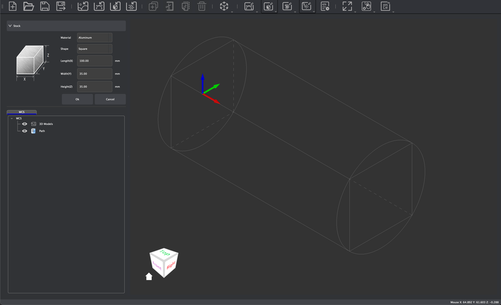
En plus du matériau, de la longueur (X), de la largeur (Y) et de la hauteur (Z), il est possible de modifier la Forme du brut dans un projet 4 axes. Ce paramètre permet de choisir entre les formes Carrée or Ronde du brut.
Créer des supports
Contrairement à la création de parcours de contour 2D ou 3D avec des paramètres permettant de générer des supports autour du contour sélectionné, les supports doivent être créés manuellement pour les parcours rotatifs. Vous pouvez importer un modèle contenant déjà des supports ou utiliser les Créer outils de Makera CAM :
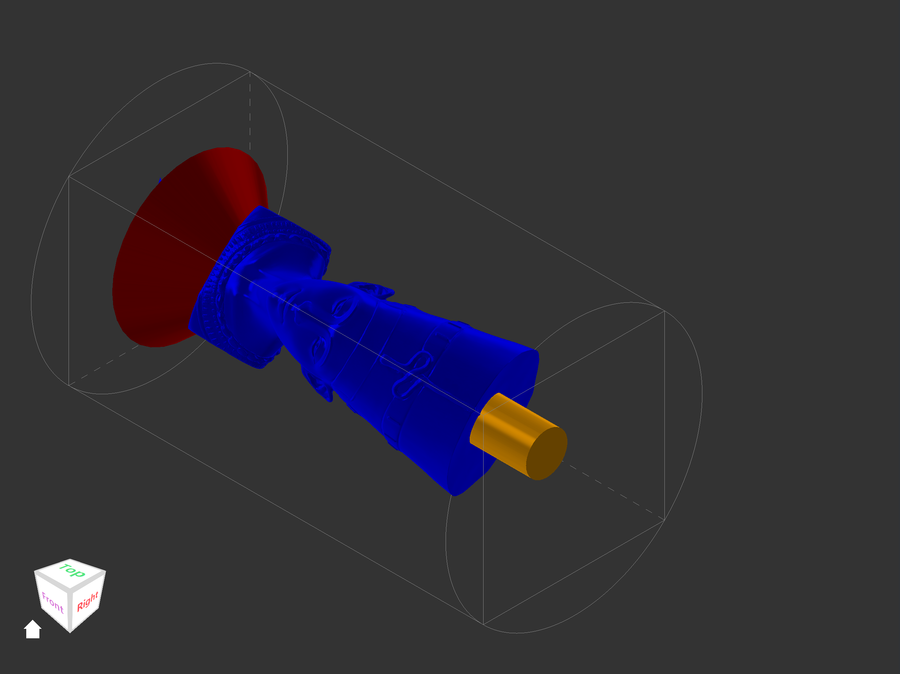
Comme expliqué précédemment dans la Créer des outils Dans la section de ce guide, Makera CAM propose des outils pour générer des modèles 3D cotés sous forme de cube, cylindre ou tronc de cône. Pour modéliser des supports dans un projet 4 axes, nous recommandons généralement de créer des cylindres ou des cônes, comme indiqué dans ce tutoriel.
Paramètres d’usinage courants
Comme pour les parcours d’outil 3 axes, certains paramètres communs peuvent être ajustés pour différents parcours rotatifs d’usinage 4 axes. Ils comprennent :
- Nom du parcours d’outil :
- Le nom du parcours d’outil actuel.
- Profondeur de coupe :
- Profondeur maximale :
- Lors de la création d’un parcours rotatif, la profondeur de fin est déterminée par le modèle 3D sélectionné et correspond par défaut à la face la plus basse du modèle. L’activation de la profondeur maximale permet de décaler ou modifier la profondeur de coupe maximale autour des géométries du modèle sélectionné.
- Profondeur maximale :
- Emplacements sûrs :
- Hauteur de dégagement :
- La coordonnée Z 0 détectée par le palpeur sert de référence pour la hauteur Z de sécurité de l’outil à une position fixe du module du quatrième axe. Lorsque l’outil exécute la commande G0 de déplacement rapide, il remonte d’abord à la hauteur de dégagement, puis se déplace rapidement horizontalement.
- Avec le quatrième axe, une hauteur de dégagement sûre correspond généralement à la moitié du diamètre du brut + 3 mm.
- Hauteur de retrait :
- La hauteur de retrait définit une position sûre vers laquelle l’outil se rétracte pendant l’usinage et doit être supérieure ou égale à la largeur et à la hauteur du brut afin d’éviter les collisions.
- Avec le quatrième axe, une hauteur de dégagement sûre correspond généralement à la moitié du diamètre du brut + 3 mm
- Hauteur de dégagement :
- Choisir un outil (Ajouter un outil)
- La bibliothèque d’outils s’ouvre pour vous permettre de sélectionner les informations de l’outil à utiliser pour le parcours d’outil. Sélectionnez sous la liste des outils les paramètres prédéfinis de traitement du matériau correspondants, puis cliquez sur Choisir pour confirmer la sélection de l’outil.
- Si l’outil est configuré avec les mêmes paramètres prédéfinis de matériau que le brut actuel, Makera CAM sélectionne automatiquement les paramètres correspondants en fonction du réglage actuel du brut. Par exemple, si le brut actuel est un alliage d’aluminium et que les paramètres de traitement de l’alliage d’aluminium sont activés dans l’outil sélectionné, l’entrée de ces paramètres est automatiquement sélectionnée.
- Paramètres de l’outil : Consultez la Speeds & Feeds page de notre wiki pour connaître les paramètres recommandés.
- Descente par passe :
- Profondeur de coupe de l’outil à chaque descente dans le matériau. Cette fonction peut être désactivée sans risque uniquement lors de la création de passes de finition si le matériau a été dégagé par un parcours précédent.
- Vitesse d’avance :
- Vitesse de déplacement horizontal de l’outil lors de la coupe du matériau.
- Vitesse de plongée :
- Vitesse de coupe descendante de l’outil dans la direction de l’axe Z lors de la coupe du matériau.
- Vitesse de rotation de la broche :
- Vitesse à laquelle l’outil tourne lorsqu’il coupe le matériau.
- Numéro de l’outil :
- Numéro de l’outil utilisé dans le parcours actuel. Lorsque plusieurs parcours conçus utilisent le même numéro d’outil, la machine ne déclenche pas le changement d’outil. Lors de la conception des parcours, veillez donc à attribuer des numéros différents aux différents outils.
- Avec la machine CNC de bureau Carvera équipée d’un changeur d’outils automatique, le numéro de l’outil correspond au numéro du porte-outil où l’outil est effectivement inséré dans le changeur automatique (1–6).
- Avec un appareil à changement d’outil manuel tel que la machine CNC de bureau Carvera Air, le numéro de l’outil correspond au numéro indiqué par la machine pour les pauses automatiques et les changements d’outil manuels.
- Numéro de l’outil utilisé dans le parcours actuel. Lorsque plusieurs parcours conçus utilisent le même numéro d’outil, la machine ne déclenche pas le changement d’outil. Lors de la conception des parcours, veillez donc à attribuer des numéros différents aux différents outils.
- Descente par passe :
- Direction :
- Horizontale :
- La pièce est usinée d’un côté à l’autre en coupant progressivement plus profondément à chaque passe. Cette méthode convient aux passes d’ébauche ou au dégagement d’une grande quantité de matériau.
- Verticale :
- Les zones de la pièce sont usinées verticalement selon le paramètre de descente par passe, puis l’outil se déplace horizontalement pour poursuivre l’usinage. Cette méthode convient aux passes de finition ou au suivi de géométries complexes dans un modèle.
- Horizontale :
- Contrepointe :
- La pièce qui maintient le brut dans le quatrième axe, à l’opposé du mandrin, s’appelle la contrepointe.
- Contrepointe activée (cochée) : les parcours d’outil seront entièrement contenus par le modèle sélectionné
- Contrepointe désactivée (non cochée) : les parcours d’outil seront contenus par la longueur (Y) du brut.
- La pièce qui maintient le brut dans le quatrième axe, à l’opposé du mandrin, s’appelle la contrepointe.
Parcours d’outil de relief rotatif
Parcours d’outil de relief rotatif servent à créer des opérations d’usinage concaves et convexes autour des caractéristiques géométriques d’un fichier de maillage 3D importé (.STL) avec le module du quatrième axe, comme indiqué dans cette vidéo.
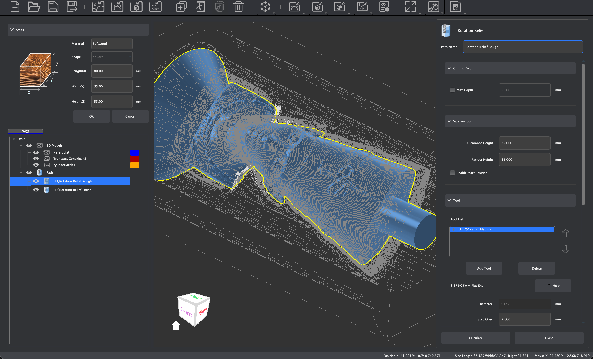
Pour créer des parcours d’outil de relief rotatif, importez d’abord un modèle 3D et transformez-le pour l’adapter au brut. Créez ensuite les supports comme décrit dans la section précédente ou dans le tutoriel associé. Une fois le modèle préparé, examinez et ajustez les paramètres suivants :
- Définir le nom du parcours d’outil
- Définir la profondeur de départ
- Profondeur maximale :
- Lorsque cette option est cochée, le relief est usiné jusqu’à une profondeur définie plutôt que jusqu’à la surface du modèle.
- Définir la hauteur de dégagement et la hauteur de retrait
- Sélectionner l’outil et modifier/confirmer ses paramètres d’usinage : Consultez la Speeds & Feeds page de notre wiki pour connaître les paramètres de coupe recommandés et par défaut.
- Le relief rotatif prend en charge plusieurs combinaisons d’outils pour retirer le matériau. Choisissez une combinaison adaptée à la taille de la zone à dégager du modèle 3D sélectionné. Le programme utilise les outils indiqués de haut en bas selon la combinaison finale.
- Selon les règles de dégagement multi-outils, il est recommandé de classer la combinaison des plus grands aux plus petits diamètres de pointe. Les grands outils retirent rapidement la majeure partie du matériau ; les petits outils dégagent ensuite les zones auxquelles ils peuvent accéder jusqu’à satisfaire les exigences du modèle 3D.
- Remarque : lors du dégagement multi-outils, il est recommandé de combiner des outils ayant le même diamètre de queue afin d’éviter de remplacer la pince de la broche. Vérifiez également que les numéros d’outil sont différents, comme indiqué précédemment.
- Remarque : nous créons généralement deux parcours distincts pour les passes d’ébauche et de finition. Cela s’explique par la grande quantité de copeaux produite pendant une passe d’ébauche avec les parcours rotatifs ; ces copeaux doivent être dégagés avant de commencer la passe de finition.
- Descente par passe :
- Comme expliqué précédemment, ce paramètre définit la profondeur de coupe par passe. Avec le relief rotatif et le dégagement multi-matériau, vous pouvez définir une descente par passe propre à chaque outil et la désactiver pour la finition après le dégagement du matériau.
- Surépaisseur de profondeur :
- Ajuste la quantité de brut laissée pendant l’usinage. La valeur par défaut est 0 mm, ce qui usine jusqu’à la profondeur définie.
- Définir la direction : Horizontale ou verticale
- Activer la contrepointe (facultatif)
- Cliquez sur [Calculer] pour terminer le calcul du parcours d’outil et générer un aperçu du parcours créé.
Utilisation des circuits imprimés
Makera CAM permet de préparer des fichiers de circuits imprimés avec des configurations d’usinage 3 axes classiques. Vous pouvez utiliser la fonction Importer un circuit imprimé pour importer les composants d’un fichier Gerber après l’avoir décompressé. Vous pouvez également importer des fichiers de conception 2D SVG et DXF pour créer des parcours d’outil 2D destinés à la fabrication de circuits imprimés. Pour plus d’informations sur les circuits imprimés dans Makera CAM, consultez ce tutoriel.
Préparation des fichiers de circuit imprimé pour Makera CAM
Avant d’exporter votre fichier de circuit imprimé, certains réglages et paramètres doivent être ajustés pour optimiser le résultat dans Makera CAM :
Pour dimensionner les lignes et les caractéristiques de votre fichier de circuit imprimé, les valeurs minimales recommandées sont :
- Largeur de ligne > 0.2 mm
- Espacement des lignes > 0.2 mm
- Diamètre de via >= 0.4 mm
- Largeur de ligne de sérigraphie > 0.25 mm
- Unité de perçage au format métrique mm 3.3
Les plus petites fraises à fond plat utilisables sont 0.1 mm\60° ou 0.2 mm\30°
Réglages supplémentaires pour exporter un fichier de circuit imprimé à utiliser avec Makera CAM :
- Exporter les largeurs de ligne lors de l’exportation des fichiers Gerber, afin de faciliter la génération des parcours d’outil de Makera CAM grâce à l’imbrication automatique
- Makera CAM reconnaît automatiquement les informations de masque de soudure dans le pastillage Gerber et les sépare en un calque indépendant. Toutefois, si le calque du masque diffère de la forme réelle du pastillage sur le calque de conception du circuit imprimé, un fichier de masque séparé doit être exporté
- Si le calque supérieur ou inférieur ne contient pas de contour, un fichier de contour séparé doit être exporté pour créer un parcours de contour.
Importer et préparer des fichiers de circuit imprimé avec Makera CAM
Lors de l’importation de vos fichiers de circuit imprimé, il est recommandé d’importer tous les fichiers nécessaires avant de modifier la conception (déplacement, rotation, mise à l’échelle, symétrie, etc.). Cela permet l’alignement automatique dans Makera CAM, comme lors de la création du fichier.
Pour aligner des fichiers de circuit imprimé après des transformations ou lorsque vous travaillez avec plusieurs WCS, l’ Centre à centre outil peut être utilisé pour faciliter l’alignement. La sélection de trous circulaires comme objets de référence et cibles fonctionne généralement le mieux, car l’alignement des formes concentriques est universel. Pour sélectionner des parties de votre circuit imprimé, vous pouvez sélectionner facilement tous les graphiques d’un ou plusieurs calques à l’aide de la liste Calques 2D du panneau des fonctions :
Si les largeurs de ligne sont exportées, le contour de votre circuit imprimé sera probablement importé sous forme de deux lignes imbriquées :
La ligne la plus extérieure sert généralement à créer les parcours de contour, tandis que la ligne intérieure doit être sélectionnée et utilisée pour créer les parcours de poche des pistes. Il est recommandé de déplacer la ligne extérieure sur son propre calque pour faciliter la sélection et la génération des parcours d’outil.
Pour les circuits imprimés double face, vous pouvez créer un second WCS dont l’origine est définie dans le coin inférieur droit par rapport au WCS par défaut, afin de retourner horizontalement le circuit pour une fabrication double face :
Les calques et parcours 2D sont propres à chaque WCS, mais vous pouvez en prévisualiser certains aspects. Centre à centre peuvent être utilisés avec des objets de WCS différents pour faciliter l’alignement des circuits imprimés double face. Vous pouvez aussi utiliser les menu Transformer outils pour définir des positions précises ou déplacer et faire pivoter manuellement votre conception. Pour créer des trous de broches d’alignement, utilisez l’ Créer outil pour créer un trou. Vous pouvez ensuite utiliser l’ Symétrie outil pour retourner le trou autour du Centre du brut pour faciliter l’alignement lors du retournement du brut.
Créer des parcours d’outil pour circuits imprimés
De nombreuses stratégies générales de création de parcours présentées dans les sections précédentes s’appliquent également aux circuits imprimés. Les fonctions d’imbrication de Makera CAM facilitent la génération des parcours lorsque les largeurs de ligne sont exportées comme indiqué précédemment.
Pistes
Les pistes peuvent être créées avec des parcours de poche 2D (anciennement appelés parcours de poche vectorielle):
Pour créer des pistes, les réglages suivants sont généralement recommandés :
- Profondeur de fin : 0.05 mm
- Outil(s) :
- Fraise de gravure pour métal, 0.2 / 30 degrés ou 0.1 / 60 degrés
- Fraises coniques, 0.6 mm, 0.8 mm, 1 mm
- Un ou plusieurs outils peuvent être combinés dans l’opération de poche 2D, du plus grand au plus petit diamètre de pointe
- Paramètres de coupe définis sur les valeurs par défaut des paramètres de circuit imprimé. Consultez la Speeds & Feeds page de notre wiki pour connaître les paramètres de coupe recommandés et par défaut.
- Stratégie de parcours : Parallèle
- Rampe : Facultatif
Trous et vias
Les trous et vias peuvent être créés avec des parcours de poche 2D (anciennement appelé Vector Pocket) ou des parcours de perçage 2D (anciennement appelé Vector Drilling):
Pour créer des trous, les réglages suivants sont généralement recommandés :
- Profondeur de fin : +0.3 mm au-delà de l’épaisseur du circuit imprimé
- Outil(s) :
- Forets pour les opérations de perçage 2D
- Fraises coniques pour les opérations de poche 2D
- Paramètres de coupe définis sur les valeurs par défaut des paramètres de circuit imprimé. Consultez la Speeds & Feeds page de notre wiki pour connaître les paramètres de coupe recommandés et par défaut.
- Stratégie de parcours : Parallèle (poche 2D)
- Rampe : Facultatif (poche 2D)
- Retrait : Activé (perçage 2D)
Périmètres
Le périmètre extérieur du circuit imprimé peut être usiné avec un parcours de contour 2D (anciennement appelé Vector Contour):
Pour créer des coupes de contour 2D, les réglages suivants sont généralement recommandés :
- Profondeur de fin : +0.3 mm au-delà de l’épaisseur du circuit imprimé
- Outil(s) :
- Fraises coniques
- Paramètres de coupe définis sur les valeurs par défaut des paramètres de circuit imprimé. Consultez la Speeds & Feeds page de notre wiki pour connaître les paramètres de coupe recommandés et par défaut.
- Stratégie de parcours : Extérieur
- Rampe : Facultatif
- Supports : Facultatif ; si aucun support n’est utilisé, fixez le circuit imprimé avec du ruban adhésif double face
Pastilles (pour circuits imprimés avec masque de soudure)
Pour fabriquer des circuits imprimés avec masque de soudure, les pastilles peuvent être usinées avec un parcours de poche 2D (anciennement appelé Vector Pocket):
Pour créer des pastilles, les réglages suivants sont généralement recommandés :
- Profondeur de fin : 0.2 mm
- Outil(s) :
- Outil de retrait du masque de soudure
- Paramètres de coupe définis sur les valeurs par défaut des paramètres de circuit imprimé. Consultez la Speeds & Feeds page de notre wiki pour connaître les paramètres de coupe recommandés et par défaut.
- Stratégie de parcours : Parallèle
Calque de sérigraphie (pour circuits imprimés avec masque de soudure)
Pour fabriquer des circuits imprimés avec masque de soudure, un calque de sérigraphie peut être gravé avec le module laser et un parcours vectoriel laser :
Pour graver un calque de sérigraphie, nous pouvons utiliser les réglages suivants avec une opération vectorielle laser :
- Vitesse : 100
- Puissance :
- 20 % pour un masque de soudure clair
- 30 % pour un masque de soudure foncé
- Mode : Remplissage
Exporter et fabriquer des circuits imprimés
Lors de l’exportation des parcours d’un circuit imprimé, différentes techniques peuvent être utilisées selon la manière dont vous prévoyez de le fabriquer.
Pour les circuits imprimés en cuivre sans masque, vous fabriquerez généralement le circuit en un seul travail, dans l’ordre suivant :
- Travail 1/1 :
- Poche 2D – pistes
- Poche 2D et/ou perçage 2D – trous / vias
- Contour 2D – contour
Pour fabriquer des circuits imprimés avec masque de soudure, vous réaliserez généralement le circuit en deux travaux, dans l’ordre suivant :
- Travail 1/2 :
- Poche 2D – pistes
- Appliquer le masque de soudure et le durcir avec une lampe UV, puis exécuter Travail 2/2 :
- Poche 2D – pastilles avec outil de retrait du masque de soudure
- Poche 2D et/ou perçage 2D – trous / vias
- Contour 2D – contour
Pour fabriquer des circuits imprimés avec masque de soudure et sérigraphie gravée au laser, vous réaliserez généralement le circuit en trois travaux, dans l’ordre suivant :
- Travail 1/3 :
- Poche 2D – pistes
- Appliquer le masque de soudure et le durcir avec une lampe UV, puis exécuter Travail 2/3 :
- Poche 2D – pastilles avec outil de retrait du masque de soudure
- Poche 2D et/ou perçage 2D – trous / vias
- Contour 2D – contour
- Appliquer le masque de soudure sans le durcir, puis exécuter Travail 3/3 :
- Laser vectoriel – durcissement du calque de sérigraphie
- Essuyer l’excédent de masque de soudure avec des lingettes imbibées d’alcool pour terminer la sérigraphie
Lors de la configuration de vos fichiers de circuit imprimé pour la fabrication, il est recommandé d’utiliser Mise à niveau automatique pour mesurer les écarts sur le brut afin que la machine puisse les compenser automatiquement selon le résultat du palpage. Lors de la fabrication de circuits imprimés en plusieurs travaux, il n’est généralement pas nécessaire de mesurer la hauteur Z ou d’effectuer une mise à niveau automatique après le premier travail, tant que la machine n’est pas réinitialisée entre les travaux (lors de l’application du masque, etc.).
Pour plus d’informations et un guide étape par étape sur l’usinage de circuits imprimés simples avec Makera CAM, consultez cette vidéo de tutoriel.